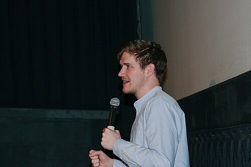
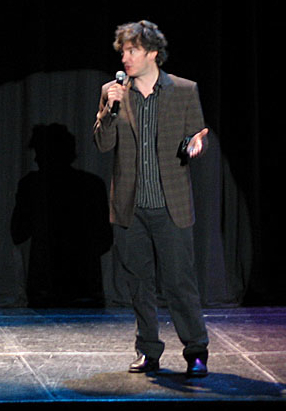
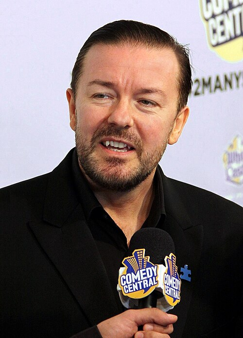

Una página por comediante. Cada número viene de sus transcripciones (y del audio cuando lo hay) comparado con los otros del corpus. Los datos van separados de la lectura: el dato es medición, la lectura es interpretación para el material propio.
Mapa del estilo
Componentes principales de los percentiles de estilo (sin palabras por minuto ni risas, que no existen para todos). El eje horizontal explica el 33 % de la variación y el vertical el 21 %. Hacia la derecha: más largo de frase y yo frente a tú; hacia la izquierda: más preguntas y groserías. Cerca = estilo parecido en estas métricas, no en el humor.
El corpus
38 comediantes y 141 especiales: 84 con datos de IMDb y 57 transcripciones más del archivo de 402, emparejadas por apellido en el título y revisadas
(57 aceptadas, 100 duplicadas de un especial ya incluido, 49 rechazadas: discursos, monólogos de TV, traducciones, textos cortos).
7 comediantes tienen un solo especial: sus páginas dicen rasgo del especial.
El rating IMDb (7,0 a 8,7) aparece solo como contexto: varía demasiado poco para concluir algo.
Índice
Comediante
Especiales
Años
Década
Adam Sandler
1
2018
2010s
Ali Wong
2
2016–2018
2010s
Anthony Jeselnik
3
2013–2019
2010s
Aziz Ansari
4
2010–2019
2010s
Bill Burr · audio
5
2010–2019
2010s
Bill Hicks · audio
3
1992–1993
1990s
Bo Burnham
4
2010–2021
2010s
Chris Rock · audio
5
1996–2018
2000s
Daniel Tosh
4
2003–2016
2000s
Dave Chappelle
11
1998–2023
2010s
Donald Glover
1
2012
2010s
Doug Stanhope
4
2004–2013
2000s
Dylan Moran
2
2006–2015
2010s
Eddie Izzard · audio
5
1994–2009
1990s
Eddie Murphy · audio
2
1983–1987
1980s
Gabriel Iglesias
4
2007–2019
2010s
George Carlin · audio
14
1977–2008
1990s
Hannah Gadsby
2
2018–2020
2010s
Hasan Minhaj
1
2017
2010s
Jerrod Carmichael
1
2022
2020s
Jerry Seinfeld
2
1998–2020
2000s
Jim Gaffigan
4
2014–2019
2010s
Jim Jefferies · audio
7
2008–2020
2010s
John Leguizamo
1
2018
2010s
John Mulaney · audio
4
2012–2023
2010s
Judah Friedlander
1
2017
2010s
Kevin Hart
5
2010–2020
2010s
Louis C.K. · audio
10
2007–2023
2010s
Mike Birbiglia · audio
4
2013–2023
2010s
Nate Bargatze
2
2015–2019
2010s
Neal Brennan
2
2014–2017
2010s
Norm Macdonald
3
1991–2022
2010s
Richard Pryor · audio
4
1971–1983
1980s
Ricky Gervais · audio
4
2004–2018
2010s
Robin Williams · audio
2
2002–2009
2000s
Russell Peters · audio
3
2006–2020
2010s
Seth Meyers
1
2019
2010s
Tom Segura
4
2014–2020
2010s
Andrés Loaiza · Alta Comedia
2
Wilmar Tovar · Alta Comedia
1
Daniela Villa · Alta Comedia
1
Alex Marín · Alta Comedia
1
Cómo leer cada página
Percentiles
Cada barra ubica al comediante entre los demás del corpus: el punto es su percentil (cuántos de los otros quedan por debajo) y la línea gris del centro es la mediana. La franja naranja clara es el intervalo de confianza del 95 %: cuánto se movería el percentil si el texto que tenemos fuera otro parecido.
El intervalo de las métricas de texto sale de remuestrear bloques de 1000 palabras (1000 réplicas). El de palabras por minuto, callbacks y temas sale de remuestrear especiales: con un solo especial no hay intervalo. Ninguno de los dos mide cuánto cambiaría el próximo especial.
«Década» compara solo con comediantes de la misma década (mediana de los años de sus especiales), cuando hay al menos cuatro.
Métricas
Palabras por minuto
palabras por minuto de duración
Variedad de vocabulario
palabras distintas por cada 1000 (TTR)
Largo de frase
palabras por frase
Yo frente a tú
% de pronombres en primera persona
Preguntas
frases con pregunta por 1000 palabras
Groserías
por 1000 palabras
Callbacks
frases que vuelven 1500+ palabras después, por 10000 palabras
Palabras entre risas
mediana entre marcas de risa del transcript; no validada contra el audio
TTR por bloque de 1000 palabras porque la proporción de palabras distintas baja con la longitud. Largo de frase y preguntas dependen de cómo puntuó el transcriptor. Callbacks: grupos de cuatro palabras con contenido que reaparecen 1500 palabras o más después (unos diez minutos); los que se repiten más de seis veces son estribillos y no cuentan. Palabras entre risas: solo en los 57 especiales cuyo transcript marca las risas.
Temas y palabras
Temas: los ocho temas curados del proyecto, en palabras del tema por cada mil. Palabras distintivas: log-odds con prior de Dirichlet informativo (Monroe, Colaresi y Quinn, «Fightin' Words»). El número es z: qué tanto más usa esa palabra que el resto del corpus, ya descontado el azar de las palabras raras. Con dos o más especiales solo cuentan palabras que aparecen en al menos dos.
Audio
Para los comediantes con video: reacciones (risa más aplauso) por minuto y su percentil entre los 79 especiales de referencia, la forma del show por décimos (naranja) contra la franja central de los especiales (gris) y la sala: memoria (cuánto se parece la reacción de una ventana de quince segundos a la anterior; p por permutación), tramos secos, tramos secos encadenados (a menos de un minuto uno del otro) y cuánto tarda en volver. El nivel depende de la mezcla de sonido; la forma y la sala son más justas.
Qué robarle
Hasta tres rasgos donde el comediante es claramente distinto (intervalo entero por encima del percentil setenta o por debajo del treinta). El dato es medición; la lectura es una interpretación para probar en tarima, no un hallazgo.
Bios y fotos: Wikidata, Wikipedia y Wikimedia Commons, con su licencia en cada página. Ningún dato biográfico viene de la memoria del modelo; si falta en esas fuentes, dice «—».
Adam Sandler
Nacimiento: 1966 · origen: Brooklyn · activo: desde 1987
Adam Richard Sandler es un comediante, actor, escritor, cantante y productor estadounidense. Después de convertirse en miembro del elenco de Saturday Night Live, ha protagonizado una gran cantidad de películas de Hollywood que han recaudado cerca de dos mil millones de dólares de taquilla.
1 especial10110 palabrasdécada 2010sRasgo del especial: un solo texto
Percentil en su década (2010s, 26 pares): palabras por minuto 19, variedad de vocabulario 27, largo de frase 92, yo frente a tú 85, preguntas 12, groserías 100, callbacks 0, palabras entre risas 5.
Citas
Palabra distintiva «ears» — Adam Sandler: 100% Fresh, hacia el minuto 72
Ears
Ears
Ears
Ears
I got…
Tema: Sexo, cuerpo y comedia cruda — Adam Sandler: 100% Fresh, hacia el minuto 42
Like, “I waited a fucking hour and 15 minutes to go on this fucking shit with you guys, and you fucking bail on me.” Then I see it …
Qué robarle
Callbacks
Dato: Callbacks: 0,0 (frases que vuelven 1500+ palabras después, por 10000 palabras); percentil 0 del corpus, sin intervalo. Rasgo del especial: hay un solo texto.
Lectura: Bits autónomos que no se citan entre sí. Para robarlo: es el formato para probar material nuevo, porque el orden importa menos.
Tema: Sexo, cuerpo y comedia cruda
Dato: Sexo, cuerpo y comedia cruda: 44,5 palabras del tema por 1000; percentil 100 del corpus. Rasgo del especial: hay un solo texto.
Lectura: Su terreno es «sexo, cuerpo y comedia cruda». Para robarlo: mira en la cita cómo entra al tema; el ángulo personal, no el tema, es lo que hace el chiste.
Largo de frase
Dato: Largo de frase: 13,1 (palabras por frase); percentil 95 del corpus, IC 95 % 81–100. Rasgo del especial: hay un solo texto.
Lectura: Frases largas: el chiste vive en la acumulación de detalles dentro de una historia. Para robarlo: deja que una frase crezca con detalles absurdos antes de cerrarla.
Nacimiento: 1982 · origen: San Francisco · activo: desde 2005
Alexandra "Ali" Wong es una actriz, comediante y escritora estadounidense, reconocida por sus especiales de comedia en vivo para Netflix Baby Cobra y Hard Knock Wife y por su participación en las series de televisión American Housewife, Are You There, Chelsea?, Inside Amy Schumer, Black Box, Tuca & Bertie y Bronca.
2 especiales14610 palabrasdécada 2010s
Ali Wong: Baby Cobra (2016); Ali Wong: Hard Knock Wife (2018)
Percentil en su década (2010s, 26 pares): palabras por minuto 12, variedad de vocabulario 100, largo de frase 85, yo frente a tú 42, preguntas 15, groserías 73, callbacks 92.
Citas
Palabra distintiva «husband» — Ali Wong: Baby Cobra, hacia el minuto 7
But my husband, I first met him at this wedding and, uh, he's– he's much better looking than me, he's way out of my league, and I saw …
Tema: Familia y vida doméstica — Ali Wong: Baby Cobra, hacia el minuto 38
Meanwhile, the mom is at home, chapping her nipples, feeding the fucking baby, and wearing a frozen diaper 'cause her pussy needs to heal from the baby's head …
Callback — Ali Wong: Baby Cobra: aparece al 7 % y vuelve al 85 % del texto
«from a third world»
Qué robarle
Variedad de vocabulario
Dato: Variedad de vocabulario: 412 (palabras distintas por cada 1000 (TTR)); percentil 95 del corpus, IC 95 % 78–100.
Lectura: Vocabulario preciso y variado: nombra las cosas exactas. Para robarlo: reescribe un bit cambiando cada palabra genérica (cosa, vaina, man) por la concreta.
Largo de frase
Dato: Largo de frase: 12,3 (palabras por frase); percentil 89 del corpus, IC 95 % 84–95.
Lectura: Frases largas: el chiste vive en la acumulación de detalles dentro de una historia. Para robarlo: deja que una frase crezca con detalles absurdos antes de cerrarla.
Preguntas
Dato: Preguntas: 10,4 (frases con pregunta por 1000 palabras); percentil 14 del corpus, IC 95 % 5–27.
Lectura: Casi no pregunta: afirma. Para robarlo: di la premisa como un hecho, sin pedir permiso; la seguridad también es parte del chiste.
Bio: https://es.wikipedia.org/wiki/Ali_Wong · https://www.wikidata.org/wiki/Q16832136Foto: Greg Harries, CC BY 2.0 (Wikimedia Commons)
Anthony Jeselnik
Nacimiento: 1978 · origen: Pittsburgh · activo: —
Anthony Jeselnik es un cómico, escritor, actor y productor estadounidense conocido por su estilo de humor negro, que enfatiza la ironía, non sequiturs, insultos mordaces, comportamiento arrogante, y un personaje que con frecuencia adopta posturas anormales.
3 especiales18595 palabrasdécada 2010s
Anthony Jeselnik: Caligula (2013); Anthony Jeselnik: Thoughts And Prayers (2015); Anthony Jeselnik: Fire In The Maternity Ward (2019)
Percentil en su década (2010s, 26 pares): palabras por minuto 0, variedad de vocabulario 54, largo de frase 27, yo frente a tú 92, preguntas 50, groserías 35, callbacks 8, palabras entre risas 29.
Citas
Palabra distintiva «anthony» — Anthony Jeselnik: Caligula, hacia el minuto 13
She was like, “Anthony, if you could have lunch with anyone in the world, living or dead, who would it be?” And I said, “I don't know.
Tema: Meta-comedia / el oficio — Anthony Jeselnik: Caligula, hacia el minuto 53
I came here to hear blind jokes tonight.” And I said, “Well, here's a blind joke.” Another good one for me was the lesbian in Portland who ran …
Callback — Anthony Jeselnik: Fire In The Maternity Ward (2019): aparece al 19 % y vuelve al 99 % del texto
«a couple of weeks»
Qué robarle
Tema: Meta-comedia / el oficio
Dato: Meta-comedia / el oficio: 15,4 palabras del tema por 1000; percentil 100 del corpus.
Lectura: Su terreno es «meta-comedia / el oficio». Para robarlo: mira en la cita cómo entra al tema; el ángulo personal, no el tema, es lo que hace el chiste.
Palabras por minuto
Dato: Palabras por minuto: 100 (palabras por minuto de duración); percentil 3 del corpus, sin intervalo.
Lectura: Habla despacio y deja trabajar el silencio. Para robarlo: antes del remate más fuerte de tu set, baja la velocidad y sostén la pausa un tiempo más del que te parece cómodo.
Yo frente a tú
Dato: Yo frente a tú: 70 (% de pronombres en primera persona); percentil 92 del corpus, IC 95 % 78–95.
Lectura: Material confesional: casi todo es sobre sí mismo. Para robarlo: el chiste a tu costa baja la defensa del público antes de un tema delicado.
Bio: https://es.wikipedia.org/wiki/Anthony_Jeselnik · https://www.wikidata.org/wiki/Q4772834Foto: Rooster T Feathers Comedy Club on YouTube, CC BY 3.0 (Wikimedia Commons)
Aziz Ansari
Nacimiento: 1983 · origen: Columbia · activo: desde 2004
Aziz Ansari es un actor, comediante de comedia en vivo y escritor estadounidense. Interpretó a Tom Haverford en el programa de NBC Parks and Recreation y a Dev Shah en la serie de Netflix Master of None.
4 especiales44290 palabrasdécada 2010s
Aziz Ansari: Intimate Moments For A Sensual Evening (2010); Aziz Ansari: Buried Alive (2013); Aziz Ansari: Live In Madison Square Garden (2015); Aziz Ansari: Right Now (2019)
Percentil en su década (2010s, 26 pares): palabras por minuto 69, variedad de vocabulario 35, largo de frase 54, yo frente a tú 15, preguntas 77, groserías 50, callbacks 65.
Citas
Palabra distintiva «clap» — Aziz Ansari: Right Now, hacia el minuto 23
Just out of curiosity, you guys, clap if you're done with R.
Tema: Tecnología y modernidad — Aziz Ansari: Buried Alive (2013), al 63 % del texto
The craziest thing I've heard with online dating is I have a friend who's gay and I asked him, I said, “Hey, you ever do online dating?” He's …
Callback — Aziz Ansari: Right Now: aparece al 0 % y vuelve al 98 % del texto
«feel so happy sometimes»
Qué robarle
Tema: Tecnología y modernidad
Dato: Tecnología y modernidad: 5,7 palabras del tema por 1000; percentil 95 del corpus.
Lectura: Su terreno es «tecnología y modernidad». Para robarlo: mira en la cita cómo entra al tema; el ángulo personal, no el tema, es lo que hace el chiste.
Preguntas
Dato: Preguntas: 20,8 (frases con pregunta por 1000 palabras); percentil 84 del corpus, IC 95 % 70–92.
Lectura: Pregunta mucho, retórica o directamente a la sala. Para robarlo: abre un bit con una pregunta que el público conteste en su cabeza antes de tu respuesta.
Palabras por minuto
Dato: Palabras por minuto: 155 (palabras por minuto de duración); percentil 78 del corpus, sin intervalo.
Lectura: Ritmo de ametralladora: la energía sale de no soltar al público. Para robarlo: recorta conectores y muletillas de un bit y pruébalo más rápido sin acelerar el remate.
Bio: https://es.wikipedia.org/wiki/Aziz_Ansari · https://www.wikidata.org/wiki/Q369482Foto: David Shankbone, CC BY 3.0 (Wikimedia Commons)
Bill Burr
Nacimiento: 1968 · origen: Canton · activo: desde 1992
William Frederic Burr, conocido como Bill Burr, es un comediante, productor, guionista y actor estadounidense. Es conocido por sus especiales de stand-up y por conducir Bill Burr's Monday Morning Podcast.
5 especiales59785 palabrasdécada 2010s
Bill Burr: Let It Go (2010); Bill Burr: You People Are All The Same (2012); Bill Burr: I’m Sorry You Feel That Way (2014); Bill Burr: Walk Your Way Out (2017); Bill Burr: Paper Tiger (2019)
Percentil en su década (2010s, 26 pares): palabras por minuto 73, variedad de vocabulario 38, largo de frase 23, yo frente a tú 8, preguntas 100, groserías 77, callbacks 46, palabras entre risas 63.
Audio
Let It Go · 62 min · 4,44 reacciones por minuto (percentil 94) · apertura 0,97, cierre 1,14 (uno = su ritmo medio) · décimo más flojo: 8
Memoria de la sala: 0,14 (p = 0,020, n = 248 ventanas).
Tramos secos: 0 (0,0 por hora), percentil 6 entre los especiales;
Ningún tramo seco encadenado.
One Night Stand · 27 min · 3,99 reacciones por minuto (percentil 65) · apertura 1,32, cierre 0,73 (uno = su ritmo medio) · décimo más flojo: 2
Memoria de la sala: −0,11 (p = 0,870, n = 109 ventanas).
Tramos secos: 1 (2,2 por hora), percentil 36 entre los especiales;
vuelve en una mediana de 45 s.
Ningún tramo seco encadenado.
También medidos, sin espacio aquí: Why Do I Do This.
Citas
Palabra distintiva «dude» — Bill Burr: Paper Tiger, hacia el minuto 4
Dude, being a First Lady, that's not a f*cking job.
Tema: Sexo, cuerpo y comedia cruda — Bill Burr: Let It Go, hacia el minuto 11
“You want a cookie, you pussy, pussy, pussy?”
Yeah, so that's when I realized I've got a…
Callback — Bill Burr: Paper Tiger: aparece al 3 % y vuelve al 30 % del texto
«the f cking worst»
Qué robarle
Preguntas
Dato: Preguntas: 29,0 (frases con pregunta por 1000 palabras); percentil 100 del corpus, IC 95 % 97–100.
Lectura: Pregunta mucho, retórica o directamente a la sala. Para robarlo: abre un bit con una pregunta que el público conteste en su cabeza antes de tu respuesta.
Yo frente a tú
Dato: Yo frente a tú: 51 (% de pronombres en primera persona); percentil 22 del corpus, IC 95 % 19–30.
Lectura: Le habla a la sala (tú, ustedes) más que de sí mismo. Para robarlo: convierte una observación propia en «ustedes también hacen esto» y mira si la sala se reconoce.
Largo de frase
Dato: Largo de frase: 9,0 (palabras por frase); percentil 24 del corpus, IC 95 % 22–30.
Lectura: Frases cortas, golpes secos. Para robarlo: corta tus remates a la mínima cantidad de palabras; la última palabra debe ser la sorpresa.
William Melvin "Bill" Hicks fue un comediante y monologuista de stand-up estadounidense, crítico social y músico nacido en Valdosta, Georgia. Su material, a menudo controvertido y con toques de humor negro, abarcó temas como la cultura pop, la cultura americana, la sexualidad, la religión, la espiritualidad, la política, la …
3 especiales25121 palabrasdécada 1990s
Bill Hicks: Relentless (1992); Bill Hicks: Revelations (1993); Bill Hicks: Live At Laff Stop, Austin, TX, And Cobbs, San Francisco, CA (1993)
Su década (1990s) tiene 2 pares: muy pocos para un percentil por década.
Audio
One Night Stand · 27 min · 4,09 reacciones por minuto (percentil 74) · apertura 0,20, cierre 1,04 (uno = su ritmo medio) · décimo más flojo: 1
Memoria de la sala: 0,06 (p = 0,216, n = 108 ventanas).
Tramos secos: 1 (2,2 por hora), percentil 37 entre los especiales;
vuelve en una mediana de 15 s.
Ningún tramo seco encadenado.
Relentless · 59 min · 3,97 reacciones por minuto (percentil 63) · apertura 0,90, cierre 0,49 (uno = su ritmo medio) · décimo más flojo: 10
Memoria de la sala: 0,13 (p = 0,028, n = 236 ventanas).
Tramos secos: 3 (3,1 por hora), percentil 47 entre los especiales;
vuelve en una mediana de 75 s.
Encadenados: min 44,8–49,2 (2 tramos, 240 s secos).
También medidos, sin espacio aquí: Revelations.
Citas
Palabra distintiva «bill» — Bill Hicks: Revelations, hacia el minuto 13
Talking about Kennedy, people come up to me:
“Bill, quit talking about Kennedy, man.
Tema: Religión, muerte y sentido — Bill Hicks: Revelations, hacia el minuto 16
We will see who believes in me now, ha ha.” “I am God, I am a prankster.” “I am killing Me.” You know, You die and go to …
Callback — Bill Hicks: Revelations: aparece al 39 % y vuelve al 79 % del texto
«the most popular idea»
Qué robarle
Tema: Religión, muerte y sentido
Dato: Religión, muerte y sentido: 14,4 palabras del tema por 1000; percentil 100 del corpus.
Lectura: Su terreno es «religión, muerte y sentido». Para robarlo: mira en la cita cómo entra al tema; el ángulo personal, no el tema, es lo que hace el chiste.
Variedad de vocabulario
Dato: Variedad de vocabulario: 412 (palabras distintas por cada 1000 (TTR)); percentil 97 del corpus, IC 95 % 89–97.
Lectura: Vocabulario preciso y variado: nombra las cosas exactas. Para robarlo: reescribe un bit cambiando cada palabra genérica (cosa, vaina, man) por la concreta.
Bio: https://es.wikipedia.org/wiki/Bill_Hicks · https://www.wikidata.org/wiki/Q35851Foto: Bill_Hicks_at_the_Laff_Stop_in_Austin,_Texas,_1991_(2).jpg: Angela Davis (Angela D.) from Austin, TX, USA derivative wor, CC BY 2.0 (Wikimedia Commons)

Bo Burnham
Nacimiento: 1990 · origen: Hamilton · activo: desde 2006
Robert Pickering "Bo" Burnham es un comediante, cantautor, actor y director estadounidense. Comenzó su carrera en YouTube en 2006 y su canal ha obtenido más de 3.46 millones de suscriptores y más de 741.8 millones de visualizaciones hasta marzo del 2023.
4 especiales30709 palabrasdécada 2010s
Bo Burnham: Words, Words, Words (2010); Bo Burnham: What (2013); Bo Burnham: Make Happy (2016); Bo Burnham: Inside (2021)
Percentil en su década (2010s, 26 pares): palabras por minuto 4, variedad de vocabulario 81, largo de frase 69, yo frente a tú 23, preguntas 46, groserías 62, callbacks 50, palabras entre risas 47.
Citas
Palabra distintiva «funny» — Bo Burnham: Words, Words, Words, hacia el minuto 1
♫
♫ What's funny, what's funny, what's funny?
Tema: Meta-comedia / el oficio — Bo Burnham: Words, Words, Words, hacia el minuto 47
I love traditional stand-up comedy, and a lot of my heroes are traditional stand-up comics, and I've been watching a lot of it, and I think I've sort …
Callback — Bo Burnham: Words, Words, Words: aparece al 18 % y vuelve al 40 % del texto
«lord of the rings»
Qué robarle
Palabras por minuto
Dato: Palabras por minuto: 113 (palabras por minuto de duración); percentil 5 del corpus, IC 95 % 0–8.
Lectura: Habla despacio y deja trabajar el silencio. Para robarlo: antes del remate más fuerte de tu set, baja la velocidad y sostén la pausa un tiempo más del que te parece cómodo.
Tema: Meta-comedia / el oficio
Dato: Meta-comedia / el oficio: 11,4 palabras del tema por 1000; percentil 95 del corpus.
Lectura: Su terreno es «meta-comedia / el oficio». Para robarlo: mira en la cita cómo entra al tema; el ángulo personal, no el tema, es lo que hace el chiste.
Bio: https://es.wikipedia.org/wiki/Bo_Burnham · https://www.wikidata.org/wiki/Q887347Foto: Montclair Film, CC BY 2.0 (Wikimedia Commons)
Chris Rock
Nacimiento: 1965 · origen: Andrews · activo: desde 1984
Christopher Julius Rock ,más conocido como Chris Rock, es un actor, comediante, guionista, productor y director de cine estadounidense. Fue elegido en los Estados Unidos como el quinto mejor cómico monologuista de todos los tiempos por Comedy Central.
5 especiales48004 palabrasdécada 2000s
Chris Rock: Bring The Pain (1996); Chris Rock: Bigger & Blacker (1999); Chris Rock: Never Scared (2004); Chris Rock: Kill The Messenger – London, New York, Johannesburg (2008); Chris Rock: Tamborine (2018)
Percentil en su década (2000s, 4 pares): palabras por minuto 100, variedad de vocabulario 0, largo de frase 25, yo frente a tú 0, preguntas 75, groserías 100, callbacks 75, palabras entre risas 100.
Audio
Big Ass Jokes · 25 min · 3,45 reacciones por minuto (percentil 39) · apertura 1,12, cierre 0,98 (uno = su ritmo medio) · décimo más flojo: 6
Memoria de la sala: 0,11 (p = 0,139, n = 100 ventanas).
Tramos secos: 1 (2,4 por hora), percentil 41 entre los especiales;
vuelve en una mediana de — s.
Ningún tramo seco encadenado.
Bigger and Blacker · 61 min · 3,77 reacciones por minuto (percentil 53) · apertura 1,25, cierre 0,62 (uno = su ritmo medio) · décimo más flojo: 10
Memoria de la sala: 0,01 (p = 0,368, n = 246 ventanas).
Tramos secos: 0 (0,0 por hora), percentil 6 entre los especiales;
Ningún tramo seco encadenado.
También medidos, sin espacio aquí: Bring the Pain, Kill the Messenger, Never Scared, Tamborine.
Citas
Palabra distintiva «man» — Chris Rock: Never Scared, hacia el minuto 1
I think he's a very progressive black man.
Tema: Raza, identidad y cultura — Chris Rock: Bigger & Blacker, hacia el minuto 37
Black people yelling, ”Racism.” White people yelling, ”Reverse racism.” Chinese people yelling, ”Sideways racism!” And the Indians ain't yelling shit 'cause they dead.
Callback — Chris Rock: Never Scared: aparece al 14 % y vuelve al 67 % del texto
«the united states government»
Qué robarle
Yo frente a tú
Dato: Yo frente a tú: 42 (% de pronombres en primera persona); percentil 3 del corpus, IC 95 % 0–11.
Lectura: Le habla a la sala (tú, ustedes) más que de sí mismo. Para robarlo: convierte una observación propia en «ustedes también hacen esto» y mira si la sala se reconoce.
Tema: Raza, identidad y cultura
Dato: Raza, identidad y cultura: 11,9 palabras del tema por 1000; percentil 97 del corpus.
Lectura: Su terreno es «raza, identidad y cultura». Para robarlo: mira en la cita cómo entra al tema; el ángulo personal, no el tema, es lo que hace el chiste.
Groserías
Dato: Groserías: 27,5 (por 1000 palabras); percentil 95 del corpus, IC 95 % 89–95.
Lectura: La grosería es ritmo y acento. Para robarlo: úsala para marcar el golpe, no de relleno entre frases.
Bio: https://es.wikipedia.org/wiki/Chris_Rock · https://www.wikidata.org/wiki/Q4109Foto: David Shankbone, CC BY 3.0 (Wikimedia Commons)
Daniel Tosh
Nacimiento: 1975 · origen: Boppard · activo: —
Daniel Dwight Tosh is an American comedian, writer, and producer. After graduating from the University of Central Florida with a degree in marketing, Tosh moved to Los Angeles to pursue a career in comedy.
4 especiales29686 palabrasdécada 2000s
Comedy Central Presents: Daniel Tosh (2003); Daniel Tosh: Completely Serious (2007); Daniel Tosh: Happy Thoughts (2011); Daniel Tosh: People Pleaser (2016)
Percentil en su década (2000s, 4 pares): palabras por minuto 25, variedad de vocabulario 100, largo de frase 50, yo frente a tú 100, preguntas 100, groserías 25, callbacks 100, palabras entre risas 0.
Citas
Palabra distintiva «joke» — Daniel Tosh: Completely Serious, hacia el minuto 4
They all the same stupid joke: “Probably made the kid more popular.” That's disgusting.
Tema: Meta-comedia / el oficio — Daniel Tosh: People Pleaser (2016), al 66 % del texto
If I was a female comic, the jokes would be completely opposite and empowering, and the crowds would be a lot smaller.
Callback — Daniel Tosh: Completely Serious: aparece al 16 % y vuelve al 66 % del texto
«i wrote that joke»
Qué robarle
Variedad de vocabulario
Dato: Variedad de vocabulario: 423 (palabras distintas por cada 1000 (TTR)); percentil 100 del corpus, IC 95 % 100–100.
Lectura: Vocabulario preciso y variado: nombra las cosas exactas. Para robarlo: reescribe un bit cambiando cada palabra genérica (cosa, vaina, man) por la concreta.
Tema: Meta-comedia / el oficio
Dato: Meta-comedia / el oficio: 9,8 palabras del tema por 1000; percentil 92 del corpus.
Lectura: Su terreno es «meta-comedia / el oficio». Para robarlo: mira en la cita cómo entra al tema; el ángulo personal, no el tema, es lo que hace el chiste.
Largo de frase
Dato: Largo de frase: 9,1 (palabras por frase); percentil 30 del corpus, IC 95 % 22–30.
Lectura: Frases cortas, golpes secos. Para robarlo: corta tus remates a la mínima cantidad de palabras; la última palabra debe ser la sorpresa.
Nacimiento: 1973 · origen: Washington D. C. · activo: desde 1987
David Khari Webber «Dave» Chappelle es un comediante, guionista, productor de televisión y cine, actor y artista estadounidense. Chappelle comenzó su carrera en el cine en la película Las locas locas aventuras de Robin Hood en 1993 y continuó interpretando pequeños papeles en películas como El Profesor chiflado, Con Air y De …
11 especiales85697 palabrasdécada 2010s
Dave Chappelle: Hbo Comedy Half-Hour (1998); Dave Chappelle: Killin’ Them Softly (2000); Dave Chappelle: For What It’s Worth (2004); Dave Chappelle: Deep In The Heart Of Texas (2017); Dave Chappelle: The Age Of Spin (2017); Dave Chappelle: Equanimity (2017); Dave Chappelle: The Bird Revelation (2017); Dave Chappelle: Sticks And Stones (2019); Dave Chappelle: 8:46 (2020); Dave Chappelle: The Closer (2021); Dave Chappelle: The Dreamer (2023)
Percentil en su década (2010s, 26 pares): palabras por minuto 27, variedad de vocabulario 62, largo de frase 31, yo frente a tú 96, preguntas 38, groserías 85, callbacks 58, palabras entre risas 37.
Citas
Palabra distintiva «dave» — Dave Chappelle: The Closer, hacia el minuto 18
… the club minding my own business and a woman came up to me, and she goes “Oh my God, Dave Chappelle.” And I was just being reciprocally nice.
Tema: Raza, identidad y cultura — Dave Chappelle: The Age Of Spin, hacia el minuto 25
Black, white, Asian, Latina, white, white…
Callback — Dave Chappelle: The Closer: aparece al 14 % y vuelve al 48 % del texto
«dababy shot and killed»
Qué robarle
Yo frente a tú
Dato: Yo frente a tú: 71 (% de pronombres en primera persona); percentil 95 del corpus, IC 95 % 86–95.
Lectura: Material confesional: casi todo es sobre sí mismo. Para robarlo: el chiste a tu costa baja la defensa del público antes de un tema delicado.
Tema: Raza, identidad y cultura
Dato: Raza, identidad y cultura: 8,7 palabras del tema por 1000; percentil 89 del corpus.
Lectura: Su terreno es «raza, identidad y cultura». Para robarlo: mira en la cita cómo entra al tema; el ángulo personal, no el tema, es lo que hace el chiste.
Groserías
Dato: Groserías: 17,3 (por 1000 palabras); percentil 78 del corpus, IC 95 % 76–81.
Lectura: La grosería es ritmo y acento. Para robarlo: úsala para marcar el golpe, no de relleno entre frases.
Bio: https://es.wikipedia.org/wiki/Dave_Chappelle · https://www.wikidata.org/wiki/Q40321Foto: John Bauld from Toronto, Canada, CC BY 2.0 (Wikimedia Commons)
Donald Glover
Nacimiento: 1983 · origen: Base de la Fuerza Aérea Edwards · activo: desde 2005
Donald McKinley Glover, conocido artísticamente como Childish Gambino o Donald Glover, es un cantautor, actor, guionista,
director, productor, cómico y empresario estadounidense. Ha sido reconocido internacionalmente en la mayoría de sus facetas artísticas: como cantautor, después de lanzar varios álbumes y mixtapes, Glover …
1 especial11185 palabrasdécada 2010sRasgo del especial: un solo texto
Percentil en su década (2010s, 26 pares): palabras por minuto 85, variedad de vocabulario 0, largo de frase 65, yo frente a tú 54, preguntas 35, groserías 42, callbacks 62.
Citas
Palabra distintiva «toys» — Donald Glover: Weirdo, hacia el minuto 57
Yeah, you go to Toys R' Us, guys.
Tema: Familia y vida doméstica — Donald Glover: Weirdo, hacia el minuto 22
And I grew up with a bunch of kids, like, my mom ran a day care and we had foster kids and we had adopted kids.
Callback — Donald Glover: Weirdo: aparece al 2 % y vuelve al 64 % del texto
«i mean 'cause i»
Qué robarle
Variedad de vocabulario
Dato: Variedad de vocabulario: 300 (palabras distintas por cada 1000 (TTR)); percentil 0 del corpus, IC 95 % 0–5. Rasgo del especial: hay un solo texto.
Lectura: Repite palabras a propósito: lenguaje llano y estructuras que vuelven. Para robarlo: repite la misma estructura de frase tres veces; el público anticipa y el giro de la tercera pega más.
Palabras por minuto
Dato: Palabras por minuto: 172 (palabras por minuto de duración); percentil 89 del corpus, sin intervalo. Rasgo del especial: hay un solo texto.
Lectura: Ritmo de ametralladora: la energía sale de no soltar al público. Para robarlo: recorta conectores y muletillas de un bit y pruébalo más rápido sin acelerar el remate.
Tema: Familia y vida doméstica
Dato: Familia y vida doméstica: 28,1 palabras del tema por 1000; percentil 89 del corpus. Rasgo del especial: hay un solo texto.
Lectura: Su terreno es «familia y vida doméstica». Para robarlo: mira en la cita cómo entra al tema; el ángulo personal, no el tema, es lo que hace el chiste.
Bio: https://es.wikipedia.org/wiki/Donald_Glover · https://www.wikidata.org/wiki/Q1239933Foto: Bill Ingalls, Public domain (Wikimedia Commons)
Doug Stanhope
Nacimiento: 1967 · origen: Worcester · activo: —
Douglas Gene "Doug" Stanhope es un comediante de stand-up, actor y escritor estadounidense. Es considerado una de las figuras más controvertidas en la escena de la comedia stand-up norteamericano.
4 especiales38592 palabrasdécada 2000s
Doug Stanhope: Deadbeat Hero (2004); Doug Stanhope: No Refunds (2007); Doug Stanhope: Before Turning The Gun On Himself (2012); Doug Stanhope: Beer Hall Putsch (2013)
Percentil en su década (2000s, 4 pares): palabras por minuto 75, variedad de vocabulario 75, largo de frase 100, yo frente a tú 50, preguntas 0, groserías 50, callbacks 0, palabras entre risas 67.
Citas
Palabra distintiva «per» — Doug Stanhope: No Refunds, hacia el minuto 3
“Ai tempi nostri per divertirci andavamo a ballare nel fienile, “non facevamo nemmeno i ditalini fino ai 35 anni…
Tema: Salud, cuerpo y envejecimiento — Doug Stanhope: Beer Hall Putsch, hacia el minuto 47
I assume if you cure breast cancer, that would cure ass cancer and face cancer and shit cancer.
Callback — Doug Stanhope: No Refunds: aparece al 20 % y vuelve al 96 % del texto
«il motivo per cui»
Qué robarle
Tema: Salud, cuerpo y envejecimiento
Dato: Salud, cuerpo y envejecimiento: 11,1 palabras del tema por 1000; percentil 100 del corpus.
Lectura: Su terreno es «salud, cuerpo y envejecimiento». Para robarlo: mira en la cita cómo entra al tema; el ángulo personal, no el tema, es lo que hace el chiste.
Callbacks
Dato: Callbacks: 0,8 (frases que vuelven 1500+ palabras después, por 10000 palabras); percentil 3 del corpus, IC 95 % 1–19.
Lectura: Bits autónomos que no se citan entre sí. Para robarlo: es el formato para probar material nuevo, porque el orden importa menos.
Variedad de vocabulario
Dato: Variedad de vocabulario: 410 (palabras distintas por cada 1000 (TTR)); percentil 92 del corpus, IC 95 % 84–100.
Lectura: Vocabulario preciso y variado: nombra las cosas exactas. Para robarlo: reescribe un bit cambiando cada palabra genérica (cosa, vaina, man) por la concreta.
Bio: https://es.wikipedia.org/wiki/Doug_Stanhope · https://www.wikidata.org/wiki/Q1251875Foto: Atlantabravz, CC BY-SA 3.0 (Wikimedia Commons)

Dylan Moran
Nacimiento: 1971 · origen: Navan · activo: desde 1992
Dylan William Moran es un comediante, escritor, actor y poeta irlandés. Es más conocido por sus monólogos de comedia de observación, por la serie Black Books, y su trabajo con Simon Pegg en películas como Shaun of the Dead y Run Fatboy Run.
2 especiales23905 palabrasdécada 2010s
Dylan Moran: Like, Totally (2006); Dylan Moran: Off The Hook (2015)
Percentil en su década (2010s, 26 pares): palabras por minuto 81, variedad de vocabulario 73, largo de frase 88, yo frente a tú 0, preguntas 8, groserías 19, callbacks 38, palabras entre risas 74.
Citas
Palabra distintiva «child» — Dylan Moran: Like, Totally, hacia el minuto 13
Even a five-year-old child knows this.
Tema: Política y Estados Unidos — Dylan Moran: Off The Hook (2015), al 4 % del texto
You need American voices, you need the American voices from the further west to counteract our European attitude, 'cause those people are so positive, they're who walk around …
Callback — Dylan Moran: Like, Totally: aparece al 0 % y vuelve al 59 % del texto
«ladies and gentlemen please»
Qué robarle
Yo frente a tú
Dato: Yo frente a tú: 39 (% de pronombres en primera persona); percentil 0 del corpus, IC 95 % 0–11.
Lectura: Le habla a la sala (tú, ustedes) más que de sí mismo. Para robarlo: convierte una observación propia en «ustedes también hacen esto» y mira si la sala se reconoce.
Preguntas
Dato: Preguntas: 9,8 (frases con pregunta por 1000 palabras); percentil 5 del corpus, IC 95 % 3–19.
Lectura: Casi no pregunta: afirma. Para robarlo: di la premisa como un hecho, sin pedir permiso; la seguridad también es parte del chiste.
Largo de frase
Dato: Largo de frase: 12,8 (palabras por frase); percentil 92 del corpus, IC 95 % 73–100.
Lectura: Frases largas: el chiste vive en la acumulación de detalles dentro de una historia. Para robarlo: deja que una frase crezca con detalles absurdos antes de cerrarla.
Bio: https://es.wikipedia.org/wiki/Dylan_Moran · https://www.wikidata.org/wiki/Q381685Foto: Fernando de Sousa of Melbourne, Australia, CC BY-SA 2.0 (Wikimedia Commons)
Eddie Izzard
Nacimiento: 1962 · origen: Adén · activo: desde 1982
Suzy Eddie Izzard es una comediante y actriz de teatro y cine del Reino Unido.
5 especiales68547 palabrasdécada 1990s
Eddie Izzard: Unrepeatable (1994); Eddie Izzard: Definite Article (1996); Eddie Izzard: Glorious (1997); Eddie Izzard: Dress To Kill (1999); Eddie Izzard: Stripped (2009)
Su década (1990s) tiene 2 pares: muy pocos para un percentil por década.
Audio
Definite Article · 104 min · 4,43 reacciones por minuto (percentil 92) · apertura 0,77, cierre 1,08 (uno = su ritmo medio) · décimo más flojo: 1
Memoria de la sala: 0,09 (p = 0,046, n = 416 ventanas).
Tramos secos: 0 (0,0 por hora), percentil 6 entre los especiales;
Ningún tramo seco encadenado.
Dress To Kill · 112 min · 4,17 reacciones por minuto (percentil 75) · apertura 0,64, cierre 1,20 (uno = su ritmo medio) · décimo más flojo: 1
Memoria de la sala: 0,40 (p = 0,000, n = 449 ventanas).
Tramos secos: 4 (2,1 por hora), percentil 35 entre los especiales;
vuelve en una mediana de 0 s.
Ningún tramo seco encadenado.
También medidos, sin espacio aquí: Force Majeure, Glorious, Live From Wembley, Sexie, Stripped, Unrepeatable, Wunderbar.
Citas
Palabra distintiva «bit» — Eddie Izzard: Definite Article, hacia el minuto 3
Well, horses have got hooves, they've got this bit of semicircular metal…
Tema: Religión, muerte y sentido — Eddie Izzard: Dress To Kill, hacia el minuto 21
‘”death, death, death, afternoon tea, death…
Callback — Eddie Izzard: Definite Article: aparece al 7 % y vuelve al 54 % del texto
«mr dog to cesar»
Qué robarle
Palabras por minuto
Dato: Palabras por minuto: 129 (palabras por minuto de duración); percentil 11 del corpus, IC 95 % 8–27.
Lectura: Habla despacio y deja trabajar el silencio. Para robarlo: antes del remate más fuerte de tu set, baja la velocidad y sostén la pausa un tiempo más del que te parece cómodo.
Tema: Religión, muerte y sentido
Dato: Religión, muerte y sentido: 11,6 palabras del tema por 1000; percentil 89 del corpus.
Lectura: Su terreno es «religión, muerte y sentido». Para robarlo: mira en la cita cómo entra al tema; el ángulo personal, no el tema, es lo que hace el chiste.
Yo frente a tú
Dato: Yo frente a tú: 47 (% de pronombres en primera persona); percentil 16 del corpus, IC 95 % 14–19.
Lectura: Le habla a la sala (tú, ustedes) más que de sí mismo. Para robarlo: convierte una observación propia en «ustedes también hacen esto» y mira si la sala se reconoce.
Bio: https://es.wikipedia.org/wiki/Eddie_Izzard · https://www.wikidata.org/wiki/Q254022Foto: Christopher William Adach from London, UK, CC BY-SA 2.0 (Wikimedia Commons)
Eddie Murphy
Nacimiento: 1961 · origen: Brooklyn · activo: desde 1976
Edward Regan Murphy, conocido artísticamente como Eddie Murphy, es un actor, director de cine, comediante y cantante estadounidense. Fue miembro del reparto habitual en Saturday Night Live de 1980 a 1984.
2 especiales23631 palabrasdécada 1980s
Eddie Murphy: Delirious (1983); Eddie Murphy: Raw (1987)
Su década (1980s) tiene 1 pares: muy pocos para un percentil por década.
Audio
Delirious · 107 min · 2,32 reacciones por minuto (percentil 11) · apertura 1,19, cierre 0,55 (uno = su ritmo medio) · décimo más flojo: 8
Memoria de la sala: 0,26 (p = 0,000, n = 429 ventanas).
Tramos secos: 16 (9,0 por hora), percentil 79 entre los especiales;
vuelve en una mediana de 120 s.
Encadenados: min 44,5–46,8 (2 tramos, 120 s secos); min 80,8–89,7 (4 tramos, 420 s secos).
Raw · 85 min · 3,26 reacciones por minuto (percentil 33) · apertura 0,98, cierre 0,52 (uno = su ritmo medio) · décimo más flojo: 10
Memoria de la sala: 0,12 (p = 0,013, n = 341 ventanas).
Tramos secos: 11 (7,7 por hora), percentil 75 entre los especiales;
vuelve en una mediana de 0 s.
Encadenados: min 54,8–60,0 (3 tramos, 240 s secos).
Citas
Palabra distintiva «motherfucker» — Eddie Murphy: Raw, hacia el minuto 3
Except only I'm getting paid for the motherfucker.
Tema: Familia y vida doméstica — Eddie Murphy: Raw, hacia el minuto 83
“If I come home and a fireman putting the house out, I say: ‘How you find out the house was burning?' ‘We got a call from your wife,' …
Callback — Eddie Murphy: Raw: aparece al 3 % y vuelve al 84 % del texto
«i am getting paid»
Qué robarle
Groserías
Dato: Groserías: 39,1 (por 1000 palabras); percentil 97 del corpus, IC 95 % 97–100.
Lectura: La grosería es ritmo y acento. Para robarlo: úsala para marcar el golpe, no de relleno entre frases.
Tema: Familia y vida doméstica
Dato: Familia y vida doméstica: 30,9 palabras del tema por 1000; percentil 92 del corpus.
Lectura: Su terreno es «familia y vida doméstica». Para robarlo: mira en la cita cómo entra al tema; el ángulo personal, no el tema, es lo que hace el chiste.
Variedad de vocabulario
Dato: Variedad de vocabulario: 321 (palabras distintas por cada 1000 (TTR)); percentil 11 del corpus, IC 95 % 5–16.
Lectura: Repite palabras a propósito: lenguaje llano y estructuras que vuelven. Para robarlo: repite la misma estructura de frase tres veces; el público anticipa y el giro de la tercera pega más.
Bio: https://es.wikipedia.org/wiki/Eddie_Murphy · https://www.wikidata.org/wiki/Q43874Foto: David Shankbone, Public domain (Wikimedia Commons)
Gabriel Iglesias
Nacimiento: 1976 · origen: San Diego · activo: desde 1997
Gabriel Jesus Iglesias, conocido simplemente como Gabriel Iglesias o Fluffy, es un comediante, actor, guionista y productor estadounidense. Ha producido varios especiales de comedia para canales de televisión como Comedy Central y Netflix.
4 especiales48251 palabrasdécada 2010s
Gabriel Iglesias: Hot And Fluffy (2007); Gabriel Iglesias: I'm Not Fat... I'm Fluffy (2009); Gabriel Iglesias: I'm Sorry For What I Said When I Was Hungry (2016); Gabriel “Fluffy” Iglesias: One Show Fits All (2019)
Percentil en su década (2010s, 26 pares): palabras por minuto 88, variedad de vocabulario 46, largo de frase 35, yo frente a tú 31, preguntas 58, groserías 12, callbacks 88, palabras entre risas 53.
Citas
Palabra distintiva «martin» — Gabriel Iglesias: I'm Sorry For What I Said When I Was Hungry, hacia el minuto 7
Oh, yeah.” Martin asked me, “How far you going up?” I said, “All the way.” I gotta see how this ends.
Tema: Meta-comedia / el oficio — Gabriel Iglesias: I'm Sorry For What I Said When I Was Hungry, hacia el minuto 27
Ticket say, ‘The Fluffy.' I don't know what comedy show is because I never go comedy show.
Callback — Gabriel Iglesias: I'm Sorry For What I Said When I Was Hungry: aparece al 25 % y vuelve al 84 % del texto
«in the front row»
Qué robarle
Palabras por minuto
Dato: Palabras por minuto: 177 (palabras por minuto de duración); percentil 92 del corpus, IC 95 % 78–97.
Lectura: Ritmo de ametralladora: la energía sale de no soltar al público. Para robarlo: recorta conectores y muletillas de un bit y pruébalo más rápido sin acelerar el remate.
Callbacks
Dato: Callbacks: 6,6 (frases que vuelven 1500+ palabras después, por 10000 palabras); percentil 92 del corpus, IC 95 % 73–95.
Lectura: Vuelve a frases de antes del show: el público premia reconocerlas. Para robarlo: anota tus tres imágenes más fuertes del primer tercio y regresa a una en el cierre.
Groserías
Dato: Groserías: 2,3 (por 1000 palabras); percentil 11 del corpus, IC 95 % 11–16.
Lectura: Limpio: el chiste no depende de la grosería. Para robarlo: prueba tu bit más grosero sin una sola; si sigue funcionando, el chiste era bueno.
Nacimiento: 1937 · muerte: 2008 · origen: Nueva York · activo: desde 1956 hasta 2008
George Denis Patrick Carlin fue un comediante, actor, autor y crítico social estadounidense. Era conocido por su comedia negra y sus reflexiones sobre política, psicología, religión y varios temas tabúes.
14 especiales130904 palabrasdécada 1990s
George Carlin at USC (1977); George Carlin: Again!* (1978); Carlin at Carnegie (1983); George Carlin: Carlin On Campus (1984); George Carlin: Playing With Your Head (1986); George Carlin: What Am I Doing In New Jersey? (1988); George Carlin: Doin' It Again (1990); George Carlin: Jamming in New York (1992); George Carlin: Back In Town (1996); George Carlin: You Are All Diseased (1999); George Carlin: You Are All Diseased (1999); George Carlin: Complaints And Grievances (2001); George Carlin: Life Is Worth Losing (2005); George Carlin: It’s Bad For Ya (2008)
Su década (1990s) tiene 2 pares: muy pocos para un percentil por década.
Audio
at Phoenix · 79 min · 3,58 reacciones por minuto (percentil 44) · apertura 0,69, cierre 1,14 (uno = su ritmo medio) · décimo más flojo: 3
Memoria de la sala: 0,12 (p = 0,017, n = 316 ventanas).
Tramos secos: 12 (9,1 por hora), percentil 80 entre los especiales;
vuelve en una mediana de 0 s.
Encadenados: min 21,5–25,2 (3 tramos, 165 s secos); min 55,2–58,0 (2 tramos, 120 s secos).
at USC · 83 min · 3,68 reacciones por minuto (percentil 49) · apertura 0,70, cierre 0,69 (uno = su ritmo medio) · décimo más flojo: 10
Memoria de la sala: 0,09 (p = 0,053, n = 331 ventanas).
Tramos secos: 8 (5,8 por hora), percentil 64 entre los especiales;
vuelve en una mediana de 0 s.
Encadenados: min 62,5–66,0 (2 tramos, 195 s secos); min 78,8–81,2 (2 tramos, 90 s secos).
También medidos, sin espacio aquí: Back in Town, Carlin on Campus, Complaints and Grievances, Doin' It Again, It's Bad for Ya, Jammin' in New York, Life Is Worth Losing, Playin' with Your Head, What Am I Doing in New Jersey, You Are All Diseased.
Citas
Palabra distintiva «non» — George Carlin: Life Is Worth Losing, hacia el minuto 2
I'm a non-believer and an overachiever.
Tema: Religión, muerte y sentido — George Carlin: It’s Bad For Ya (2008), al 21 % del texto
Now, speaking of dead people in heaven, there are some people who not only believe that their dead parents in heaven can see them.
Callback — George Carlin: Life Is Worth Losing: aparece al 20 % y vuelve al 59 % del texto
«large numbers of people»
Qué robarle
Tema: Religión, muerte y sentido
Dato: Religión, muerte y sentido: 12,2 palabras del tema por 1000; percentil 97 del corpus.
Lectura: Su terreno es «religión, muerte y sentido». Para robarlo: mira en la cita cómo entra al tema; el ángulo personal, no el tema, es lo que hace el chiste.
Yo frente a tú
Dato: Yo frente a tú: 42 (% de pronombres en primera persona); percentil 5 del corpus, IC 95 % 0–11.
Lectura: Le habla a la sala (tú, ustedes) más que de sí mismo. Para robarlo: convierte una observación propia en «ustedes también hacen esto» y mira si la sala se reconoce.
Variedad de vocabulario
Dato: Variedad de vocabulario: 392 (palabras distintas por cada 1000 (TTR)); percentil 78 del corpus, IC 95 % 78–86.
Lectura: Vocabulario preciso y variado: nombra las cosas exactas. Para robarlo: reescribe un bit cambiando cada palabra genérica (cosa, vaina, man) por la concreta.
Bio: https://es.wikipedia.org/wiki/George_Carlin · https://www.wikidata.org/wiki/Q150651Foto: Little David Records, Public domain (Wikimedia Commons)
Hannah Gadsby
Nacimiento: 1978 · origen: Smithton · activo: —
Hannah Gadsby es una comediante australiana. Saltó a la fama internacional tras el éxito de Nanette, su especial de comedia para Netflix.
2 especiales20725 palabrasdécada 2010s
Hannah Gadsby: Nanette (2018); Hannah Gadsby: Douglas (2020)
Percentil en su década (2010s, 26 pares): palabras por minuto 50, variedad de vocabulario 50, largo de frase 4, yo frente a tú 58, preguntas 42, groserías 54, callbacks 96.
Citas
Palabra distintiva «tension» — Hannah Gadsby: Nanette, hacia el minuto 27
‘Cause when you laugh, you release tension.
Tema: Meta-comedia / el oficio — Hannah Gadsby: Douglas, hacia el minuto 11
Right, I've toured this show around the world and I can report that no audience anywhere has known how to collectively respond to just the mention…
Callback — Hannah Gadsby: Douglas: aparece al 0 % y vuelve al 99 % del texto
«douglas douglass apple tree»
Qué robarle
Callbacks
Dato: Callbacks: 13,5 (frases que vuelven 1500+ palabras después, por 10000 palabras); percentil 97 del corpus, IC 95 % 97–97.
Lectura: Vuelve a frases de antes del show: el público premia reconocerlas. Para robarlo: anota tus tres imágenes más fuertes del primer tercio y regresa a una en el cierre.
Tema: Meta-comedia / el oficio
Dato: Meta-comedia / el oficio: 14,4 palabras del tema por 1000; percentil 97 del corpus.
Lectura: Su terreno es «meta-comedia / el oficio». Para robarlo: mira en la cita cómo entra al tema; el ángulo personal, no el tema, es lo que hace el chiste.
Largo de frase
Dato: Largo de frase: 7,9 (palabras por frase); percentil 5 del corpus, IC 95 % 3–8.
Lectura: Frases cortas, golpes secos. Para robarlo: corta tus remates a la mínima cantidad de palabras; la última palabra debe ser la sorpresa.
Hasan Minhaj es un comediante, escritor, productor, comentarista político, actor y presentador de televisión estadounidense de ascendencia india. Su programa de Netflix Patriot Act con Hasan Minhaj ganó dos premios Peabody y dos premios Webby.
1 especial10920 palabrasdécada 2010sRasgo del especial: un solo texto
Percentil en su década (2010s, 26 pares): palabras por minuto 58, variedad de vocabulario 85, largo de frase 15, yo frente a tú 77, preguntas 73, groserías 38, callbacks 85, palabras entre risas 79.
Citas
Palabra distintiva «dad» — Hasan Minhaj: Homecoming King, hacia el minuto 2
… in a town in India, population 990,000 – that's a small town – my dad heard a buzz in the streets about this woman named Seema, my mom.
Tema: Familia y vida doméstica — Hasan Minhaj: Homecoming King, hacia el minuto 4
“That's the ending?” So my dad marries my mom, they come to the States, they have me, in Davis, California, but my mom has to go back to …
Callback — Hasan Minhaj: Homecoming King: aparece al 13 % y vuelve al 30 % del texto
«camry we are driving»
Qué robarle
Tema: Familia y vida doméstica
Dato: Familia y vida doméstica: 32,1 palabras del tema por 1000; percentil 95 del corpus. Rasgo del especial: hay un solo texto.
Lectura: Su terreno es «familia y vida doméstica». Para robarlo: mira en la cita cómo entra al tema; el ángulo personal, no el tema, es lo que hace el chiste.
Callbacks
Dato: Callbacks: 6,4 (frases que vuelven 1500+ palabras después, por 10000 palabras); percentil 89 del corpus, sin intervalo. Rasgo del especial: hay un solo texto.
Lectura: Vuelve a frases de antes del show: el público premia reconocerlas. Para robarlo: anota tus tres imágenes más fuertes del primer tercio y regresa a una en el cierre.
Largo de frase
Dato: Largo de frase: 8,4 (palabras por frase); percentil 16 del corpus, IC 95 % 8–22. Rasgo del especial: hay un solo texto.
Lectura: Frases cortas, golpes secos. Para robarlo: corta tus remates a la mínima cantidad de palabras; la última palabra debe ser la sorpresa.
Nacimiento: 1987 · origen: Winston-Salem · activo: desde 2008
Jerrod Carmichael es un comediante, actor y escritor estadounidense. Es el creador y protagonista del programa de televisión The Carmichael Show de NBC, emitido entre 2015 y 2017.
1 especial5455 palabrasdécada 2020sRasgo del especial: un solo texto
Su década (2020s) tiene 0 pares: muy pocos para un percentil por década.
Citas
Palabra distintiva «mom» — Jerrod Carmichael: Rothaniel, hacia el minuto 2
I've always hated that name, no one calls me that except for my mom.
Tema: Familia y vida doméstica — Jerrod Carmichael: Rothaniel, hacia el minuto 5
My mom's dad had four kids with my mom's mom, his wife, and four kids outside of that marriage, just kind of scattered about.
Callback — Jerrod Carmichael: Rothaniel: aparece al 2 % y vuelve al 52 % del texto
«my whole life i»
Qué robarle
Palabras por minuto
Dato: Palabras por minuto: 97 (palabras por minuto de duración); percentil 0 del corpus, sin intervalo. Rasgo del especial: hay un solo texto.
Lectura: Habla despacio y deja trabajar el silencio. Para robarlo: antes del remate más fuerte de tu set, baja la velocidad y sostén la pausa un tiempo más del que te parece cómodo.
Yo frente a tú
Dato: Yo frente a tú: 80 (% de pronombres en primera persona); percentil 100 del corpus, IC 95 % 100–100. Rasgo del especial: hay un solo texto.
Lectura: Material confesional: casi todo es sobre sí mismo. Para robarlo: el chiste a tu costa baja la defensa del público antes de un tema delicado.
Tema: Familia y vida doméstica
Dato: Familia y vida doméstica: 41,4 palabras del tema por 1000; percentil 100 del corpus. Rasgo del especial: hay un solo texto.
Lectura: Su terreno es «familia y vida doméstica». Para robarlo: mira en la cita cómo entra al tema; el ángulo personal, no el tema, es lo que hace el chiste.
Bio: https://es.wikipedia.org/wiki/Jerrod_Carmichael · https://www.wikidata.org/wiki/Q20973967Foto: CleftClips, CC BY 2.0 (Wikimedia Commons)
Jerry Seinfeld
Nacimiento: 1954 · origen: Brooklyn · activo: desde 1980
Jerome Allen Seinfeld es un comediante, actor, escritor, productor y director estadounidense. Es conocido por interpretarse a sí mismo en la serie de comedia Seinfeld, que creó y escribió con Larry David.
2 especiales17819 palabrasdécada 2000s
Jerry Seinfeld: 'i'm Telling You For The Last Time' (1998); Jerry Seinfeld: 23 Hours To Kill (2020)
Percentil en su década (2000s, 4 pares): palabras por minuto 0, variedad de vocabulario 25, largo de frase 75, yo frente a tú 75, preguntas 25, groserías 0, callbacks 50.
Citas
Palabra distintiva «jerry» — Jerry Seinfeld: 'i'm Telling You For The Last Time', hacia el minuto 6
Jerry Seinfeld: Playboy Interview
Do the people that work in these shops in the airport have any idea what the prices are every place else in the world?
Tema: Tecnología y modernidad — Jerry Seinfeld: 23 Hours To Kill (2020), al 30 % del texto
Then I started thinking maybe they put Uber on the phone because that makes me take the phone, 'cause the phone is using me to get around.
Callback — Jerry Seinfeld: 'i'm Telling You For The Last Time': aparece al 10 % y vuelve al 80 % del texto
«do whatever the hell»
Qué robarle
Tema: Tecnología y modernidad
Dato: Tecnología y modernidad: 6,5 palabras del tema por 1000; percentil 97 del corpus.
Lectura: Su terreno es «tecnología y modernidad». Para robarlo: mira en la cita cómo entra al tema; el ángulo personal, no el tema, es lo que hace el chiste.
Groserías
Dato: Groserías: 1,1 (por 1000 palabras); percentil 5 del corpus, IC 95 % 5–8.
Lectura: Limpio: el chiste no depende de la grosería. Para robarlo: prueba tu bit más grosero sin una sola; si sigue funcionando, el chiste era bueno.
Palabras por minuto
Dato: Palabras por minuto: 123 (palabras por minuto de duración); percentil 8 del corpus, sin intervalo.
Lectura: Habla despacio y deja trabajar el silencio. Para robarlo: antes del remate más fuerte de tu set, baja la velocidad y sostén la pausa un tiempo más del que te parece cómodo.
Bio: https://es.wikipedia.org/wiki/Jerry_Seinfeld · https://www.wikidata.org/wiki/Q215506Foto: Alan Light, CC BY 2.0 (Wikimedia Commons)
Jim Gaffigan
Nacimiento: 1966 · origen: Elgin · activo: desde 1999
James Christopher Gaffigan es un actor, comediante y escritor estadounidense. Sus temáticas como comediante de stand-up a menudo tratan sobre la paternidad, la pereza y la comida.
4 especiales43535 palabrasdécada 2010s
Jim Gaffigan: Obsessed (2014); Jim Gaffigan: Cinco (2017); Jim Gaffigan: Noble Ape (2018); Jim Gaffigan: Quality Time (2019)
Percentil en su década (2010s, 26 pares): palabras por minuto 38, variedad de vocabulario 88, largo de frase 58, yo frente a tú 65, preguntas 65, groserías 4, callbacks 19, palabras entre risas 58.
Citas
Palabra distintiva «bread» — Jim Gaffigan: Obsessed, hacia el minuto 10
I was in Arizona and New Mexico, and there are people eating fried bread.
Tema: Salud, cuerpo y envejecimiento — Jim Gaffigan: Obsessed, hacia el minuto 45
I came here to read a novel.” Mostly the people that are drunk in bars are drunk because they're drinking shots.
Callback — Jim Gaffigan: Noble Ape: aparece al 0 % y vuelve al 100 % del texto
«boy that is mom»
Qué robarle
Groserías
Dato: Groserías: 0,6 (por 1000 palabras); percentil 3 del corpus, IC 95 % 3–3.
Lectura: Limpio: el chiste no depende de la grosería. Para robarlo: prueba tu bit más grosero sin una sola; si sigue funcionando, el chiste era bueno.
Tema: Salud, cuerpo y envejecimiento
Dato: Salud, cuerpo y envejecimiento: 8,9 palabras del tema por 1000; percentil 86 del corpus.
Lectura: Su terreno es «salud, cuerpo y envejecimiento». Para robarlo: mira en la cita cómo entra al tema; el ángulo personal, no el tema, es lo que hace el chiste.
Bio: https://es.wikipedia.org/wiki/Jim_Gaffigan · https://www.wikidata.org/wiki/Q2093638Foto: Montclair Film, CC BY 2.0 (Wikimedia Commons)
Jim Jefferies
Nacimiento: 1977 · origen: Sídney · activo: —
Geoff James Nugent, más conocido como Jim Jefferies, es un comediante, actor y escritor australiano-estadounidense. Él creó y protagonizó comedia de situación Legit (2013-2014) y late night The Jim Jefferies Show (2017-2019) en Comedy Central.
7 especiales69808 palabrasdécada 2010s
Jim Jefferies: Contraband (2008); Jim Jefferies: I Swear To God (2009); Jim Jefferies: Alcoholocaust (2010); Jim Jefferies: Bare (2014); Jim Jefferies: Freedumb (2016); Jim Jefferies: This Is Me Now (2018); Jim Jefferies: Intolerant (2020)
Percentil en su década (2010s, 26 pares): palabras por minuto 31, variedad de vocabulario 42, largo de frase 77, yo frente a tú 69, preguntas 19, groserías 92, callbacks 35, palabras entre risas 18.
Audio
Contraband · 71 min · 4,22 reacciones por minuto (percentil 77) · apertura 0,82, cierre 1,21 (uno = su ritmo medio) · décimo más flojo: 1
Memoria de la sala: 0,17 (p = 0,002, n = 285 ventanas).
Tramos secos: 1 (0,8 por hora), percentil 18 entre los especiales;
vuelve en una mediana de 60 s.
Ningún tramo seco encadenado.
I Swear To God · 56 min · 4,30 reacciones por minuto (percentil 82) · apertura 0,84, cierre 1,08 (uno = su ritmo medio) · décimo más flojo: 5
Memoria de la sala: 0,07 (p = 0,123, n = 224 ventanas).
Tramos secos: 4 (4,3 por hora), percentil 59 entre los especiales;
vuelve en una mediana de 0 s.
Ningún tramo seco encadenado.
Citas
Palabra distintiva «went» — Jim Jefferies: Freedumb, hacia el minuto 8
‘Cause that's why people went to see Bill Cosby, 'cause they wanted to see a good, clean, wholesome comedian…
Tema: Sexo, cuerpo y comedia cruda — Jim Jefferies: I Swear To God, hacia el minuto 47
and I fake orgasm with a condom on, eh, and women don't think that men can fake orgasm but we can fucking fake orgasm.
Callback — Jim Jefferies: Freedumb: aparece al 5 % y vuelve al 59 % del texto
«on a daily basis»
Qué robarle
Tema: Sexo, cuerpo y comedia cruda
Dato: Sexo, cuerpo y comedia cruda: 34,7 palabras del tema por 1000; percentil 95 del corpus.
Lectura: Su terreno es «sexo, cuerpo y comedia cruda». Para robarlo: mira en la cita cómo entra al tema; el ángulo personal, no el tema, es lo que hace el chiste.
Groserías
Dato: Groserías: 22,5 (por 1000 palabras); percentil 86 del corpus, IC 95 % 84–89.
Lectura: La grosería es ritmo y acento. Para robarlo: úsala para marcar el golpe, no de relleno entre frases.
Largo de frase
Dato: Largo de frase: 12,2 (palabras por frase); percentil 84 del corpus, IC 95 % 81–92.
Lectura: Frases largas: el chiste vive en la acumulación de detalles dentro de una historia. Para robarlo: deja que una frase crezca con detalles absurdos antes de cerrarla.
Percentil en su década (2010s, 26 pares): palabras por minuto 8, variedad de vocabulario 96, largo de frase 62, yo frente a tú 46, preguntas 62, groserías 81, callbacks 73, palabras entre risas 89.
Citas
Palabra distintiva «john» — John Leguizamo's Road To Broadway, hacia el minuto 4
My son's actually a spic-greaseball-hebe-kike, okay?” The little shit's dad turns to me, “John, I'm terribly sorry.
Tema: Política y Estados Unidos — John Leguizamo's Road To Broadway, hacia el minuto 26
I was gonna go to war on my son's behalf and get him real facts on real Latin war heroes.
Callback — John Leguizamo's Road To Broadway: aparece al 3 % y vuelve al 29 % del texto
«of his eighth grade»
Qué robarle
Tema: Política y Estados Unidos
Dato: Política y Estados Unidos: 8,4 palabras del tema por 1000; percentil 97 del corpus. Rasgo del especial: hay un solo texto.
Lectura: Su terreno es «política y estados unidos». Para robarlo: mira en la cita cómo entra al tema; el ángulo personal, no el tema, es lo que hace el chiste.
Palabras por minuto
Dato: Palabras por minuto: 130 (palabras por minuto de duración); percentil 14 del corpus, sin intervalo. Rasgo del especial: hay un solo texto.
Lectura: Habla despacio y deja trabajar el silencio. Para robarlo: antes del remate más fuerte de tu set, baja la velocidad y sostén la pausa un tiempo más del que te parece cómodo.
Variedad de vocabulario
Dato: Variedad de vocabulario: 401 (palabras distintas por cada 1000 (TTR)); percentil 86 del corpus, IC 95 % 84–86. Rasgo del especial: hay un solo texto.
Lectura: Vocabulario preciso y variado: nombra las cosas exactas. Para robarlo: reescribe un bit cambiando cada palabra genérica (cosa, vaina, man) por la concreta.
Bio: https://es.wikipedia.org/wiki/John_Leguizamo · https://www.wikidata.org/wiki/Q295233Foto: PhilipRomano, CC BY-SA 4.0 (Wikimedia Commons)
John Mulaney
Nacimiento: 1982 · origen: Chicago · activo: desde 2002
John Edmund Mulaney es un actor cómico, guionista, actor de voz y productor estadounidense conocido por su trabajo como guionista en Saturday Night Live y como humorista con especiales de comedia como: The Top Part (2009), New in Town (2012), The Comeback Kid (2015), Kid Gorgeous (2018), y Baby J (2023), por el que ganó el …
4 especiales39988 palabrasdécada 2010s
John Mulaney: New In Town (2012); John Mulaney: The Comeback Kid (2015); John Mulaney: Kid Gorgeous At Radio City (2018); John Mulaney: Baby J (2023)
Percentil en su década (2010s, 26 pares): palabras por minuto 62, variedad de vocabulario 65, largo de frase 96, yo frente a tú 81, preguntas 23, groserías 23, callbacks 23, palabras entre risas 18.
Audio
New In Town · 40 min · 3,07 reacciones por minuto (percentil 25) · apertura 0,94, cierre 1,20 (uno = su ritmo medio) · décimo más flojo: 4
Memoria de la sala: −0,07 (p = 0,806, n = 162 ventanas).
Tramos secos: 2 (3,0 por hora), percentil 46 entre los especiales;
vuelve en una mediana de 0 s.
Ningún tramo seco encadenado.
Citas
Palabra distintiva «john» — John Mulaney: New In Town, hacia el minuto 0
♬ New in town,
♬ John Mulaney's New In Town…
Tema: Salud, cuerpo y envejecimiento — John Mulaney: New In Town, hacia el minuto 53
He said that he had a regular doctor's appointment and at the end of it he said to his doctor: “Hey doctor, sometimes I get nervous on airplanes.” …
Callback — John Mulaney: New In Town: aparece al 2 % y vuelve al 84 % del texto
«walking down the street»
Qué robarle
Largo de frase
Dato: Largo de frase: 13,5 (palabras por frase); percentil 97 del corpus, IC 95 % 92–97.
Lectura: Frases largas: el chiste vive en la acumulación de detalles dentro de una historia. Para robarlo: deja que una frase crezca con detalles absurdos antes de cerrarla.
Tema: Salud, cuerpo y envejecimiento
Dato: Salud, cuerpo y envejecimiento: 10,7 palabras del tema por 1000; percentil 97 del corpus.
Lectura: Su terreno es «salud, cuerpo y envejecimiento». Para robarlo: mira en la cita cómo entra al tema; el ángulo personal, no el tema, es lo que hace el chiste.
Groserías
Dato: Groserías: 3,4 (por 1000 palabras); percentil 19 del corpus, IC 95 % 16–19.
Lectura: Limpio: el chiste no depende de la grosería. Para robarlo: prueba tu bit más grosero sin una sola; si sigue funcionando, el chiste era bueno.
Nacimiento: 1969 · origen: Gaithersburg · activo: desde 2000
Judah Friedlander es un actor y comediante estadounidense, conocido por interpretar el papel del escritor Frank Rossitano en la comedia 30 Rock de la NBC. Friedlander también es conocido por su papel de Toby Radloff en la película American Splendor, un papel que le valió críticas favorables y una nominación al mejor actor …
1 especial11088 palabrasdécada 2010sRasgo del especial: un solo texto
Judah Friedlander: America Is The Greatest Country In The United States (2017)
Percentil en su década (2010s, 26 pares): palabras por minuto 15, variedad de vocabulario 92, largo de frase 0, yo frente a tú 4, preguntas 92, groserías 31, callbacks 77.
Citas
Palabra distintiva «country» — Judah Friedlander: America Is The Greatest Country In The United States, hacia el minuto 4
I think you were simply a country that was in search of better-tasting cuisine.
Tema: Política y Estados Unidos — Judah Friedlander: America Is The Greatest Country In The United States, hacia el minuto 12
America has military bases in Europe, Europe has zero military bases in America.
Callback — Judah Friedlander: America Is The Greatest Country In The United States: aparece al 7 % y vuelve al 73 % del texto
«country in the world»
Qué robarle
Tema: Política y Estados Unidos
Dato: Política y Estados Unidos: 19,6 palabras del tema por 1000; percentil 100 del corpus. Rasgo del especial: hay un solo texto.
Lectura: Su terreno es «política y estados unidos». Para robarlo: mira en la cita cómo entra al tema; el ángulo personal, no el tema, es lo que hace el chiste.
Largo de frase
Dato: Largo de frase: 7,6 (palabras por frase); percentil 3 del corpus, IC 95 % 0–14. Rasgo del especial: hay un solo texto.
Lectura: Frases cortas, golpes secos. Para robarlo: corta tus remates a la mínima cantidad de palabras; la última palabra debe ser la sorpresa.
Preguntas
Dato: Preguntas: 24,0 (frases con pregunta por 1000 palabras); percentil 95 del corpus, IC 95 % 76–100. Rasgo del especial: hay un solo texto.
Lectura: Pregunta mucho, retórica o directamente a la sala. Para robarlo: abre un bit con una pregunta que el público conteste en su cabeza antes de tu respuesta.
Bio: https://es.wikipedia.org/wiki/Judah_Friedlander · https://www.wikidata.org/wiki/Q71130Foto: Nightscream, CC BY 3.0 (Wikimedia Commons)
Kevin Hart
Nacimiento: 1979 · origen: Estados Unidos · activo: desde 2001
Kevin Darnell Hart es un actor y comediante estadounidense. Nacido y criado en Filadelfia, Hart comenzó su carrera ganando varios concursos de comedia amateur en clubes de Nueva Inglaterra, que culminó en su primer descanso real en 2001, cuando fue elegido por Judd Apatow para un papel recurrente en la serie de televisión …
5 especiales63229 palabrasdécada 2010s
Kevin Hart: Seriously Funny (2010); Kevin Hart: Let Me Explain (2013); Kevin Hart: What Now (2016); Kevin Hart: Irresponsible (2019); Kevin Hart: Zero F**ks Given (2020)
Percentil en su década (2010s, 26 pares): palabras por minuto 96, variedad de vocabulario 8, largo de frase 8, yo frente a tú 73, preguntas 69, groserías 96, callbacks 81, palabras entre risas 84.
Citas
Palabra distintiva «kevin» — Kevin Hart: Seriously Funny, hacia el minuto 10
Said, “Kevin, come here.” Told me to come to the front of the class.
Tema: Familia y vida doméstica — Kevin Hart: Irresponsible (2019), al 43 % del texto
Feeding your kid, bathing your kid, clothing your kid, to school, from school, potty training.
Callback — Kevin Hart: Seriously Funny: aparece al 5 % y vuelve al 41 % del texto
«nowhere all i hear»
Qué robarle
Palabras por minuto
Dato: Palabras por minuto: 187 (palabras por minuto de duración); percentil 97 del corpus, sin intervalo.
Lectura: Ritmo de ametralladora: la energía sale de no soltar al público. Para robarlo: recorta conectores y muletillas de un bit y pruébalo más rápido sin acelerar el remate.
Variedad de vocabulario
Dato: Variedad de vocabulario: 313 (palabras distintas por cada 1000 (TTR)); percentil 5 del corpus, IC 95 % 3–8.
Lectura: Repite palabras a propósito: lenguaje llano y estructuras que vuelven. Para robarlo: repite la misma estructura de frase tres veces; el público anticipa y el giro de la tercera pega más.
Largo de frase
Dato: Largo de frase: 8,1 (palabras por frase); percentil 8 del corpus, IC 95 % 5–16.
Lectura: Frases cortas, golpes secos. Para robarlo: corta tus remates a la mínima cantidad de palabras; la última palabra debe ser la sorpresa.
Bio: https://es.wikipedia.org/wiki/Kevin_Hart · https://www.wikidata.org/wiki/Q618352Foto: Eva Rinaldi, CC BY-SA 2.0 (Wikimedia Commons)
Louis C.K.
Nacimiento: 1967 · origen: Washington D. C. · activo: desde 1985
Louis Alfred Székely, conocido profesionalmente como Louis C.K., es un comediante, actor, escritor, cineasta. Obtuvo el premio Peabody en 2012 y recibió seis premios Primetime Emmy, así como numerosos premios por, Louie y sus especiales de stand-up Live at the Beacon Theater (2011) y Oh My God (2013).
10 especiales91651 palabrasdécada 2010s
Louis C.K.: Shameless (2007); Louis C.K.: Chewed Up (2008); Louis C.K.: Hilarious (2010); Louis C.K.: Live At The Beacon Theatre (2011); Louis C.K. Oh My God (2013); Louis C.K.: Live At The Comedy Store (2015); Louis C.K. 2017; Sincerely Louis C.K. (2020); Louis C.K.: Sorry (2021); Louis C.K. At The Dolby (2023)
Percentil en su década (2010s, 26 pares): palabras por minuto 23, variedad de vocabulario 15, largo de frase 46, yo frente a tú 35, preguntas 31, groserías 88, callbacks 27, palabras entre risas 42.
Audio
Back to the Garden · 114 min · 0,77 reacciones por minuto (percentil 2) · apertura 0,28, cierre 1,44 (uno = su ritmo medio) · décimo más flojo: 6
Memoria de la sala: 0,40 (p = 0,000, n = 457 ventanas).
Tramos secos: 22 (11,6 por hora), percentil 84 entre los especiales;
vuelve en una mediana de 128 s.
Encadenados: min 1,8–26,0 (5 tramos, 1365 s secos); min 33,8–36,2 (2 tramos, 105 s secos); min 56,8–59,8 (2 tramos, 135 s secos); min 63,5–69,2 (3 tramos, 270 s secos).
Beacon · 58 min · 2,81 reacciones por minuto (percentil 18) · apertura 1,49, cierre 1,34 (uno = su ritmo medio) · décimo más flojo: 8
Memoria de la sala: 0,03 (p = 0,228, n = 234 ventanas).
Tramos secos: 2 (2,1 por hora), percentil 34 entre los especiales;
vuelve en una mediana de 52 s.
Ningún tramo seco encadenado.
También medidos, sin espacio aquí: Chewed Up, Comedy Store, Dolby, Oh My God, Shameless, Sincerely, Sorry.
Citas
Palabra distintiva «kids» — Louis C.K.: Hilarious, hacia el minuto 5
But the part that's difficult is being single at 41 after ten years of marriage and two kids.
Tema: Religión, muerte y sentido — Louis C.K. 2017, hacia el minuto 17
Jesus.” “Jesus plus two, Jesus plus three, Jesus plus four.” Jesus plus 2017 years, four months and three days is when your license expires.
Callback — Louis C.K.: Hilarious: aparece al 36 % y vuelve al 95 % del texto
«i swear to god»
Qué robarle
Tema: Religión, muerte y sentido
Dato: Religión, muerte y sentido: 11,4 palabras del tema por 1000; percentil 86 del corpus.
Lectura: Su terreno es «religión, muerte y sentido». Para robarlo: mira en la cita cómo entra al tema; el ángulo personal, no el tema, es lo que hace el chiste.
Variedad de vocabulario
Dato: Variedad de vocabulario: 335 (palabras distintas por cada 1000 (TTR)); percentil 19 del corpus, IC 95 % 19–22.
Lectura: Repite palabras a propósito: lenguaje llano y estructuras que vuelven. Para robarlo: repite la misma estructura de frase tres veces; el público anticipa y el giro de la tercera pega más.
Groserías
Dato: Groserías: 18,1 (por 1000 palabras); percentil 81 del corpus, IC 95 % 76–81.
Lectura: La grosería es ritmo y acento. Para robarlo: úsala para marcar el golpe, no de relleno entre frases.
Bio: https://es.wikipedia.org/wiki/Louis_C.K. · https://www.wikidata.org/wiki/Q15079Foto: YMH Studios, CC BY 3.0 (Wikimedia Commons)
Mike Birbiglia
Nacimiento: 1978 · origen: Shrewsbury · activo: —
Mike Birbiglia is an American comedian, actor, director, producer and Emmy-nominated writer. He has written and performed a series of award-winning solo shows worldwide.
4 especiales44541 palabrasdécada 2010s
Mike Birbiglia: My Girlfriend's Boyfriend (2013); Mike Birbiglia: Thank God For Jokes (2017); Mike Birbiglia: The New One (2019); Mike Birbiglia: The Old Man And The Pool (2023)
Percentil en su década (2010s, 26 pares): palabras por minuto 42, variedad de vocabulario 58, largo de frase 81, yo frente a tú 100, preguntas 0, groserías 8, callbacks 100, palabras entre risas 29.
Audio
My Girlfriends Boyfriend · 72 min · 3,17 reacciones por minuto (percentil 30) · apertura 1,15, cierre 0,51 (uno = su ritmo medio) · décimo más flojo: 10
Memoria de la sala: 0,22 (p = 0,000, n = 290 ventanas).
Tramos secos: 9 (7,4 por hora), percentil 72 entre los especiales;
vuelve en una mediana de 0 s.
Ningún tramo seco encadenado.
Citas
Palabra distintiva «says» — Mike Birbiglia: The Old Man And The Pool, hacia el minuto 15
There's that one that says, “Slippery when wet,”
and you know some kid went down pretty hard on them tiles.
Tema: Salud, cuerpo y envejecimiento — Mike Birbiglia: The Old Man And The Pool, hacia el minuto 47
It's, “Cancer to diabetes!”
“Diabetes to heart disease.
Callback — Mike Birbiglia: The Old Man And The Pool: aparece al 2 % y vuelve al 98 % del texto
«in the midnight heavy»
Qué robarle
Preguntas
Dato: Preguntas: 7,6 (frases con pregunta por 1000 palabras); percentil 0 del corpus, IC 95 % 0–3.
Lectura: Casi no pregunta: afirma. Para robarlo: di la premisa como un hecho, sin pedir permiso; la seguridad también es parte del chiste.
Callbacks
Dato: Callbacks: 20,2 (frases que vuelven 1500+ palabras después, por 10000 palabras); percentil 100 del corpus, IC 95 % 100–100.
Lectura: Vuelve a frases de antes del show: el público premia reconocerlas. Para robarlo: anota tus tres imágenes más fuertes del primer tercio y regresa a una en el cierre.
Yo frente a tú
Dato: Yo frente a tú: 77 (% de pronombres en primera persona); percentil 97 del corpus, IC 95 % 97–97.
Lectura: Material confesional: casi todo es sobre sí mismo. Para robarlo: el chiste a tu costa baja la defensa del público antes de un tema delicado.
Bio: https://en.wikipedia.org/wiki/Mike_Birbiglia · https://www.wikidata.org/wiki/Q5576465Foto: Photographer: Brian Friedman. Copyright holder: Mike Lavoie, CC BY-SA 3.0 (Wikimedia Commons)
Nate Bargatze
Nacimiento: 1979 · origen: Old Hickory · activo: —
Nathanael Bargatze es un actor, guionista, productor y comediante estadounidense. Se le ha calificado como un comediante de humor limpio y se ha destacado por su tono seco y monótono.
2 especiales18628 palabrasdécada 2010s
Nate Bargatze: Full Time Magic (2015); Nate Bargatze: The Tennessee Kid (2019)
Percentil en su década (2010s, 26 pares): palabras por minuto 92, variedad de vocabulario 4, largo de frase 42, yo frente a tú 62, preguntas 54, groserías 0, callbacks 4.
Citas
Palabra distintiva «clown» — Nate Bargatze: The Tennessee Kid, hacia el minuto 31
He was a clown at the very beginning, just in case you're like, “How do you get into something like that?” Uh…
Tema: Salud, cuerpo y envejecimiento — Nate Bargatze: The Tennessee Kid, hacia el minuto 21
She was like, “Ah, I didn't know you were a doctor.” I'm like, “I am a doctor.” Just two dumb animals talking to each other.
Callback — Nate Bargatze: Full Time Magic (2015): aparece al 60 % y vuelve al 96 % del texto
«just starts yelling at»
Qué robarle
Groserías
Dato: Groserías: 0,1 (por 1000 palabras); percentil 0 del corpus, IC 95 % 0–0.
Lectura: Limpio: el chiste no depende de la grosería. Para robarlo: prueba tu bit más grosero sin una sola; si sigue funcionando, el chiste era bueno.
Variedad de vocabulario
Dato: Variedad de vocabulario: 311 (palabras distintas por cada 1000 (TTR)); percentil 3 del corpus, IC 95 % 3–8.
Lectura: Repite palabras a propósito: lenguaje llano y estructuras que vuelven. Para robarlo: repite la misma estructura de frase tres veces; el público anticipa y el giro de la tercera pega más.
Palabras por minuto
Dato: Palabras por minuto: 180 (palabras por minuto de duración); percentil 95 del corpus, sin intervalo.
Lectura: Ritmo de ametralladora: la energía sale de no soltar al público. Para robarlo: recorta conectores y muletillas de un bit y pruébalo más rápido sin acelerar el remate.
Bio: https://es.wikipedia.org/wiki/Nate_Bargatze · https://www.wikidata.org/wiki/Q18704890Foto: Lisa Gansky from New York, NY, USA, CC BY-SA 2.0 (Wikimedia Commons)
Sin foto con licencia libre en Wikimedia Commons
Neal Brennan
Nacimiento: 1973 · origen: Villanova · activo: desde 1995
Neal Brennan es un comediante, escritor, productor, director y presentador de pódcast estadounidense. Es el creador, junto a Dave Chappelle, de la serie de Comedy Central Chappelle's Show (2003-2006) y por su especial de comedia stand up de Netflix 3 Mics (2017).
2 especiales18214 palabrasdécada 2010s
Neal Brennan: Women And Black Dudes (2014); Neal Brennan: 3 Mics (2017)
Percentil en su década (2010s, 26 pares): palabras por minuto 46, variedad de vocabulario 77, largo de frase 73, yo frente a tú 50, preguntas 27, groserías 58, callbacks 42, palabras entre risas 0.
Citas
Palabra distintiva «cute» — Neal Brennan: 3 Mics, hacia el minuto 42
… “I want a guy who's tall, broad shoulders, and I want him to be cute, rich, thoughtful, romantic.” And then the world's, like, “How about five-seven, broke, super …
Tema: Raza, identidad y cultura — Neal Brennan: 3 Mics, hacia el minuto 27
A lot of white people go, “Black people talk about slavery too much as it is.” First of all, if Italians went through slavery, they'd never shut the …
Callback — Neal Brennan: 3 Mics: aparece al 13 % y vuelve al 29 % del texto
«which makes sense because»
Qué robarle
Tema: Raza, identidad y cultura
Dato: Raza, identidad y cultura: 11,8 palabras del tema por 1000; percentil 95 del corpus.
Lectura: Su terreno es «raza, identidad y cultura». Para robarlo: mira en la cita cómo entra al tema; el ángulo personal, no el tema, es lo que hace el chiste.
Largo de frase
Dato: Largo de frase: 11,6 (palabras por frase); percentil 81 del corpus, IC 95 % 73–81.
Lectura: Frases largas: el chiste vive en la acumulación de detalles dentro de una historia. Para robarlo: deja que una frase crezca con detalles absurdos antes de cerrarla.
Nacimiento: 1959 · muerte: 2021 · origen: Quebec · activo: desde 1983 hasta 2021
Norman Gene Macdonald fue un comediante, escritor y actor canadiense. Conocido por sus cinco temporadas en Saturday Night Live, que incluyeron sirviendo como presentador de Weekend Update por tres años.
3 especiales25767 palabrasdécada 2010s
Norm Macdonald: One Night Stand (1991); Norm Macdonald: Hitler’s Dog, Gossip & Trickery (2017); Norm Macdonald: Nothing Special (2022)
Percentil en su década (2010s, 26 pares): palabras por minuto 100, variedad de vocabulario 19, largo de frase 50, yo frente a tú 19, preguntas 88, groserías 27, callbacks 15, palabras entre risas 100.
Citas
Palabra distintiva «norm» — Norm Macdonald: Nothing Special, hacia el minuto 0
Norm was working hard preparing material for his Netflix special – until COVID shut things down.
Tema: Meta-comedia / el oficio — Norm Macdonald: Nothing Special, hacia el minuto 48
Now, a sketch can maybe do better on air than it did– but a joke, if it bombs at dress in that format, it will bomb on air.
Callback — Norm Macdonald: Nothing Special: aparece al 31 % y vuelve al 99 % del texto
«he goes i cannot»
Qué robarle
Palabras por minuto
Dato: Palabras por minuto: 217 (palabras por minuto de duración); percentil 100 del corpus, sin intervalo.
Lectura: Ritmo de ametralladora: la energía sale de no soltar al público. Para robarlo: recorta conectores y muletillas de un bit y pruébalo más rápido sin acelerar el remate.
Preguntas
Dato: Preguntas: 22,5 (frases con pregunta por 1000 palabras); percentil 92 del corpus, IC 95 % 76–95.
Lectura: Pregunta mucho, retórica o directamente a la sala. Para robarlo: abre un bit con una pregunta que el público conteste en su cabeza antes de tu respuesta.
Callbacks
Dato: Callbacks: 1,2 (frases que vuelven 1500+ palabras después, por 10000 palabras); percentil 14 del corpus, IC 95 % 1–16.
Lectura: Bits autónomos que no se citan entre sí. Para robarlo: es el formato para probar material nuevo, porque el orden importa menos.
Bio: https://es.wikipedia.org/wiki/Norm_Macdonald · https://www.wikidata.org/wiki/Q1371229Foto: Greg2600, CC BY-SA 2.0 (Wikimedia Commons)
Richard Pryor
Nacimiento: 1940 · muerte: 2005 · origen: Peoria · activo: desde 1963 hasta 1997
Richard Thomas Pryor Sr. fue un comediante, actor y crítico social estadounidense.
4 especiales37662 palabrasdécada 1980s
Richard Pryor: Live And Smokin’ (1971); Richard Pryor: Live In Concert (1979); Richard Pryor: Live On The Sunset Strip (1982); Richard Pryor: …here And Now (1983)
Su década (1980s) tiene 1 pares: muy pocos para un percentil por década.
Audio
Sunset Strip · 76 min · 3,55 reacciones por minuto (percentil 40) · apertura 0,81, cierre 0,89 (uno = su ritmo medio) · décimo más flojo: 9
Memoria de la sala: 0,10 (p = 0,047, n = 305 ventanas).
Tramos secos: 7 (5,5 por hora), percentil 63 entre los especiales;
vuelve en una mediana de 0 s.
Ningún tramo seco encadenado.
Citas
Palabra distintiva «motherfucker» — Richard Pryor: Live And Smokin’ (1971), al 4 % del texto
Can you do that?” “No, but I will tomorrow, motherfucker.”
You gotta process and shit, you know.
Tema: Raza, identidad y cultura — Richard Pryor: Live And Smokin’ (1971), al 61 % del texto
Black man come to our neighborhood, “Black is beautiful, Africa's your home, beware the black man, be proud to be black.” And my parents go, “That n i …
Callback — Richard Pryor: Live In Concert: aparece al 6 % y vuelve al 63 % del texto
«walking down the street»
Qué robarle
Largo de frase
Dato: Largo de frase: 7,5 (palabras por frase); percentil 0 del corpus, IC 95 % 0–5.
Lectura: Frases cortas, golpes secos. Para robarlo: corta tus remates a la mínima cantidad de palabras; la última palabra debe ser la sorpresa.
Groserías
Dato: Groserías: 40,6 (por 1000 palabras); percentil 100 del corpus, IC 95 % 97–100.
Lectura: La grosería es ritmo y acento. Para robarlo: úsala para marcar el golpe, no de relleno entre frases.
Variedad de vocabulario
Dato: Variedad de vocabulario: 328 (palabras distintas por cada 1000 (TTR)); percentil 16 del corpus, IC 95 % 14–19.
Lectura: Repite palabras a propósito: lenguaje llano y estructuras que vuelven. Para robarlo: repite la misma estructura de frase tres veces; el público anticipa y el giro de la tercera pega más.
Bio: https://es.wikipedia.org/wiki/Richard_Pryor · https://www.wikidata.org/wiki/Q294912Foto: GAC=General Artists Corporation (management)/Photographer:Berk Costello, New York City/Mister Kelly's, who sent the phot, Public domain (Wikimedia Commons)

Ricky Gervais
Nacimiento: 1961 · origen: Reading · activo: desde 1983
Ricky Dene Gervais es un humorista, director, escritor, guionista, músico y actor de cine y televisión británico. The Office, Extras y After Life son algunos trabajos destacados de su carrera.
4 especiales46063 palabrasdécada 2010s
Ricky Gervais Live 2: Politics (2004); Ricky Gervais: Live IV – Science (2010); Ricky Gervais: Out Of England 2 (2010); Ricky Gervais: Humanity (2018)
Percentil en su década (2010s, 26 pares): palabras por minuto 35, variedad de vocabulario 69, largo de frase 19, yo frente a tú 38, preguntas 81, groserías 46, callbacks 12, palabras entre risas 95.
Audio
Animals · 72 min · 3,86 reacciones por minuto (percentil 59) · apertura 0,70, cierre 0,71 (uno = su ritmo medio) · décimo más flojo: 1
Memoria de la sala: 0,45 (p = 0,000, n = 287 ventanas).
Tramos secos: 5 (4,2 por hora), percentil 56 entre los especiales;
vuelve en una mediana de 75 s.
Ningún tramo seco encadenado.
Fame · 77 min · 3,05 reacciones por minuto (percentil 23) · apertura 0,85, cierre 1,00 (uno = su ritmo medio) · décimo más flojo: 7
Memoria de la sala: 0,09 (p = 0,051, n = 310 ventanas).
Tramos secos: 4 (3,1 por hora), percentil 49 entre los especiales;
vuelve en una mediana de 0 s.
Ningún tramo seco encadenado.
También medidos, sin espacio aquí: Out of England 2, politics, Science.
Citas
Palabra distintiva «fat» — Ricky Gervais: Humanity, hacia el minuto 23
As opposed to asking people, “Why do you have children?” Let's ask the fat lady in the leggings why she's had eight, shall we?
Tema: Religión, muerte y sentido — Ricky Gervais: Humanity, hacia el minuto 59
You're not gonna say to him, “Do you believe in Satan?” And have him say, “Bit far-fetched.” Why doesn't God kill Satan?
Callback — Ricky Gervais: Humanity: aparece al 12 % y vuelve al 84 % del texto
«depends on the joke»
Qué robarle
Tema: Religión, muerte y sentido
Dato: Religión, muerte y sentido: 11,6 palabras del tema por 1000; percentil 92 del corpus.
Lectura: Su terreno es «religión, muerte y sentido». Para robarlo: mira en la cita cómo entra al tema; el ángulo personal, no el tema, es lo que hace el chiste.
Callbacks
Dato: Callbacks: 1,1 (frases que vuelven 1500+ palabras después, por 10000 palabras); percentil 11 del corpus, IC 95 % 3–22.
Lectura: Bits autónomos que no se citan entre sí. Para robarlo: es el formato para probar material nuevo, porque el orden importa menos.
Preguntas
Dato: Preguntas: 21,2 (frases con pregunta por 1000 palabras); percentil 86 del corpus, IC 95 % 78–92.
Lectura: Pregunta mucho, retórica o directamente a la sala. Para robarlo: abre un bit con una pregunta que el público conteste en su cabeza antes de tu respuesta.
Bio: https://es.wikipedia.org/wiki/Ricky_Gervais · https://www.wikidata.org/wiki/Q23517Foto: Thomas Atilla Lewis at https://www.flickr.com/people/51761894@N00, CC BY-SA 2.0 (Wikimedia Commons)
Robin Williams
Nacimiento: 1951 · muerte: 2014 · origen: Chicago · activo: desde 1972 hasta 2014
Robin McLaurin Williams fue un comediante, actor y actor de voz estadounidense. Ganador de un premio Óscar, cinco Globos de Oro, un premio del Sindicato de Actores, dos premios Emmy y tres premios Grammy.
2 especiales26907 palabrasdécada 2000s
Robin Williams Live On Broadway (2002); Robin Williams: Weapons Of Self Destruction (2009)
Percentil en su década (2000s, 4 pares): palabras por minuto 50, variedad de vocabulario 50, largo de frase 0, yo frente a tú 25, preguntas 50, groserías 75, callbacks 25, palabras entre risas 33.
Audio
Live at the Met · 63 min · 4,23 reacciones por minuto (percentil 78) · apertura 1,24, cierre 1,79 (uno = su ritmo medio) · décimo más flojo: 9
Memoria de la sala: 0,29 (p = 0,000, n = 251 ventanas).
Tramos secos: 0 (0,0 por hora), percentil 6 entre los especiales;
Ningún tramo seco encadenado.
Citas
Palabra distintiva «drug» — Robin Williams: Weapons Of Self Destruction, hacia el minuto 19
And the drug they gave me for the surgery was a drug called propofol which is nicknamed milk of amnesia.
Tema: Salud, cuerpo y envejecimiento — Robin Williams: Weapons Of Self Destruction, hacia el minuto 59
When I was growing up they used to say, “Robin, drugs can kill you.” And now that I'm 58, my doctor's going, “Robin, you need drugs to live.” …
Callback — Robin Williams: Weapons Of Self Destruction: aparece al 19 % y vuelve al 43 % del texto
«and i thought wait»
Qué robarle
Tema: Salud, cuerpo y envejecimiento
Dato: Salud, cuerpo y envejecimiento: 10,2 palabras del tema por 1000; percentil 95 del corpus.
Lectura: Su terreno es «salud, cuerpo y envejecimiento». Para robarlo: mira en la cita cómo entra al tema; el ángulo personal, no el tema, es lo que hace el chiste.
Variedad de vocabulario
Dato: Variedad de vocabulario: 409 (palabras distintas por cada 1000 (TTR)); percentil 89 del corpus, IC 95 % 84–100.
Lectura: Vocabulario preciso y variado: nombra las cosas exactas. Para robarlo: reescribe un bit cambiando cada palabra genérica (cosa, vaina, man) por la concreta.
Yo frente a tú
Dato: Yo frente a tú: 43 (% de pronombres en primera persona); percentil 11 del corpus, IC 95 % 3–11.
Lectura: Le habla a la sala (tú, ustedes) más que de sí mismo. Para robarlo: convierte una observación propia en «ustedes también hacen esto» y mira si la sala se reconoce.
Bio: https://es.wikipedia.org/wiki/Robin_Williams · https://www.wikidata.org/wiki/Q83338Foto: Eva Rinaldi, CC BY-SA 2.0 (Wikimedia Commons)
Russell Peters
Nacimiento: 1970 · origen: Toronto · activo: —
Russell Dominic Peters es un humorista canadiense de ascendencia anglo-india. Su estilo de comedia se enfoca principalmente en su ambiente cultural así como también en varios estereotipos culturales y raciales.
3 especiales32315 palabrasdécada 2010s
Russell Peters: Outsourced (2006); Russell Peters: Almost Famous (2016); Russell Peters: Deported (2020)
Percentil en su década (2010s, 26 pares): palabras por minuto 54, variedad de vocabulario 12, largo de frase 12, yo frente a tú 12, preguntas 96, groserías 65, callbacks 69, palabras entre risas 68.
Audio
Outsourced · 71 min · 3,85 reacciones por minuto (percentil 58) · apertura 1,11, cierre 1,07 (uno = su ritmo medio) · décimo más flojo: 5
Memoria de la sala: 0,06 (p = 0,154, n = 286 ventanas).
Tramos secos: 4 (3,4 por hora), percentil 51 entre los especiales;
vuelve en una mediana de 15 s.
Encadenados: min 56,0–58,8 (2 tramos, 120 s secos).
Red White And Brown · 75 min · 2,00 reacciones por minuto (percentil 6) · apertura 1,42, cierre 0,96 (uno = su ritmo medio) · décimo más flojo: 5
Memoria de la sala: 0,03 (p = 0,236, n = 302 ventanas).
Tramos secos: 10 (7,9 por hora), percentil 77 entre los especiales;
vuelve en una mediana de 15 s.
Encadenados: min 8,2–10,2 (2 tramos, 90 s secos).
Citas
Palabra distintiva «indian» — Russell Peters: Outsourced, hacia el minuto 1
Or at least the Indian dream.
Tema: Raza, identidad y cultura — Russell Peters: Outsourced, hacia el minuto 59
White Americans, it's not fair that immigrants come here and tell you that you have no culture because you do have things that are your culture.
Callback — Russell Peters: Outsourced: aparece al 0 % y vuelve al 89 % del texto
«is guys russell peters»
Qué robarle
Tema: Raza, identidad y cultura
Dato: Raza, identidad y cultura: 17,2 palabras del tema por 1000; percentil 100 del corpus.
Lectura: Su terreno es «raza, identidad y cultura». Para robarlo: mira en la cita cómo entra al tema; el ángulo personal, no el tema, es lo que hace el chiste.
Preguntas
Dato: Preguntas: 27,6 (frases con pregunta por 1000 palabras); percentil 97 del corpus, IC 95 % 95–100.
Lectura: Pregunta mucho, retórica o directamente a la sala. Para robarlo: abre un bit con una pregunta que el público conteste en su cabeza antes de tu respuesta.
Variedad de vocabulario
Dato: Variedad de vocabulario: 317 (palabras distintas por cada 1000 (TTR)); percentil 8 del corpus, IC 95 % 3–11.
Lectura: Repite palabras a propósito: lenguaje llano y estructuras que vuelven. Para robarlo: repite la misma estructura de frase tres veces; el público anticipa y el giro de la tercera pega más.
Bio: https://es.wikipedia.org/wiki/Russell_Peters · https://www.wikidata.org/wiki/Q470906Foto: gdcgraphics at https://www.flickr.com/photos/gdcgraphics/, CC BY-SA 3.0 (Wikimedia Commons)
Seth Meyers
Nacimiento: 1973 · origen: Evanston · activo: desde 1995
Seth Adam Meyers es un presentador de televisión, productor, actor y comediante estadounidense. Ha participado entre 2001 y 2014 como jefe de guiones, guionista y presentador de Weekend Update y actor de Saturday Night Live.
1 especial9488 palabrasdécada 2010sRasgo del especial: un solo texto
Percentil en su década (2010s, 26 pares): palabras por minuto 77, variedad de vocabulario 23, largo de frase 100, yo frente a tú 88, preguntas 4, groserías 15, callbacks 54.
Citas
Palabra distintiva «wife» — Seth Meyers: Lobby Baby, hacia el minuto 3
But I will say, over the course of the five years I dated my wife before we got married, I think, to my in-laws, I became, to them, …
Tema: Familia y vida doméstica — Seth Meyers: Lobby Baby, hacia el minuto 20
Take it from me, a man who has also had a baby out of his vagina.” And my wife looks back at me and says, “The baby is …
Callback — Seth Meyers: Lobby Baby: aparece al 13 % y vuelve al 77 % del texto
«that piece of news»
Qué robarle
Largo de frase
Dato: Largo de frase: 14,9 (palabras por frase); percentil 100 del corpus, IC 95 % 100–100. Rasgo del especial: hay un solo texto.
Lectura: Frases largas: el chiste vive en la acumulación de detalles dentro de una historia. Para robarlo: deja que una frase crezca con detalles absurdos antes de cerrarla.
Preguntas
Dato: Preguntas: 8,2 (frases con pregunta por 1000 palabras); percentil 3 del corpus, IC 95 % 0–14. Rasgo del especial: hay un solo texto.
Lectura: Casi no pregunta: afirma. Para robarlo: di la premisa como un hecho, sin pedir permiso; la seguridad también es parte del chiste.
Tema: Familia y vida doméstica
Dato: Familia y vida doméstica: 34,2 palabras del tema por 1000; percentil 97 del corpus. Rasgo del especial: hay un solo texto.
Lectura: Su terreno es «familia y vida doméstica». Para robarlo: mira en la cita cómo entra al tema; el ángulo personal, no el tema, es lo que hace el chiste.
Thomas Weston Segura es un comediante, escritor, autor, actor y presentador de podcasts estadounidense. Segura es coanfitrión del podcast Your Mom's House con su esposa y también comediante Christina Pazsitzky.
4 especiales43748 palabrasdécada 2010s
Tom Segura: Completely Normal (2014); Tom Segura: Mostly Stories (2016); Tom Segura: Disgraceful (2018); Tom Segura: Ball Hog (2020)
Percentil en su década (2010s, 26 pares): palabras por minuto 65, variedad de vocabulario 31, largo de frase 38, yo frente a tú 27, preguntas 85, groserías 69, callbacks 31, palabras entre risas 11.
Citas
Palabra distintiva «goes» — Tom Segura: Completely Normal, hacia el minuto 14
The guy comes from behind the counter and he goes, “where are you from?” I said, “Los Angeles.” And he goes, “yeah, I got family in Denver.” And …
Tema: Sexo, cuerpo y comedia cruda — Tom Segura: Completely Normal, hacia el minuto 74
you're a fucking asshole”, and you're never gonna amount to anything,” and I shut the fucking door.
Callback — Tom Segura: Completely Normal: aparece al 14 % y vuelve al 85 % del texto
«cannot handle that shit»
Qué robarle
Preguntas
Dato: Preguntas: 21,7 (frases con pregunta por 1000 palabras); percentil 89 del corpus, IC 95 % 81–92.
Lectura: Pregunta mucho, retórica o directamente a la sala. Para robarlo: abre un bit con una pregunta que el público conteste en su cabeza antes de tu respuesta.
Bio: https://es.wikipedia.org/wiki/Tom_Segura · https://www.wikidata.org/wiki/Q17087888Foto: Zach Catanzareti Photo, CC BY 2.0 (Wikimedia Commons)
Alta Comedia, medida igual
Las páginas siguientes aplican las mismas métricas a los cuatro integrantes. Antes de leerlas:
Idioma. El corpus está en inglés y los textos propios en español. Pronombres, groserías y temas usan listas en español; el TTR en español sale más alto por la conjugación. Grabación. Celular o cámara en sala frente a mezclas de TV: el nivel de reacción no se compara con los especiales, solo la forma, la sala y el índice dentro de la misma noche. Formato. Sets dentro de un show de varios (Hoy Nace un Chiste) y, para Andrés, un show completo (Ansioso). Whisper se salta partes del audio: el texto está incompleto, más en los tramos de interacción con el público.
Texto en español transcrito por Whisper (se salta partes; largo de frase y preguntas no son comparables), grabación de sala y formato distinto: los percentiles contra el corpus son orientativos. El puesto entre los cuatro integrantes sí es de igual a igual.
Puesto entre los cuatro integrantes: palabras por minuto 1.º, variedad de vocabulario 2.º, largo de frase 1.º, yo frente a tú 3.º, preguntas 3.º, groserías 3.º, callbacks 1.º.
Audio: la sala
Hoy Nace un Chiste (17 jul 2026) (set en show de varios): 22,4 min, 2,01 reacciones por minuto, índice 0,95 · Ansioso (ago 2025) (show completo, solo): 66,8 min, 3,07 reacciones por minuto · Set en La Korte (31 jul 2025) (show completo, solo): 20,4 min, 3,03 reacciones por minuto.
Índice: frente al promedio de esa noche (uno = promedio); solo compara dentro del mismo show.
Ansioso (ago 2025)
Memoria de la sala: 0,17 (p = 0,008, n = 268 ventanas).
Tramos secos: 7 (6,3 por hora);
vuelve en una mediana de 22 s.
Encadenados: min 30,0–32,2 (2 tramos, 105 s secos).
Hoy Nace un Chiste (17 jul 2026)
Memoria de la sala: −0,04 (p = 0,578, n = 90 ventanas).
Tramos secos: 3 (8,0 por hora);
vuelve en una mediana de 45 s.
Encadenados: min 12,5–16,8 (3 tramos, 195 s secos).
minutos contados desde el inicio de su set.
Set en La Korte (31 jul 2025)
Memoria de la sala: 0,15 (p = 0,076, n = 82 ventanas).
Tramos secos: 1 (2,9 por hora);
vuelve en una mediana de 0 s.
Ningún tramo seco encadenado.audio, sin transcripción.
Quietud antes del remate
Ansioso: caminar 0,90 veces lo normal antes de una reacción fuerte (p = 0,321), gesticular 1,03 (p = 0,648); n = 83 reacciones fuertes, postura detectada en el 95,4 % de los cuadros. Set en La Korte: caminar 0,80 veces lo normal antes de una reacción fuerte (p = 0,090), gesticular 0,91 (p = 0,263); n = 25 reacciones fuertes, postura detectada en el 98,7 % de los cuadros.
Menos de uno = más quieto antes de la risa que al azar; con p grande no es concluyente.
Porque cuando yo salgo no me dicen, ¿y usted para dónde va?
Qué mantener o trabajar
Yo frente a tú
Dato: Yo frente a tú: 82 (% de pronombres en primera persona); percentil 100 del corpus, IC 95 % 95–100.
Lectura: Material confesional: casi todo es sobre sí mismo. Para robarlo: el chiste a tu costa baja la defensa del público antes de un tema delicado.
Palabras por minuto
Dato: Palabras por minuto: 115 (palabras por minuto de duración); percentil 8 del corpus, IC 95 % 0–11.
Lectura: Habla despacio y deja trabajar el silencio. Para robarlo: antes del remate más fuerte de tu set, baja la velocidad y sostén la pausa un tiempo más del que te parece cómodo.
Alta Comedia · transcripción WhisperFoto: Alta Comedia
Wilmar Tovar
1 texto1531 palabrasRasgo del especial: un solo texto
Texto en español transcrito por Whisper (se salta partes; largo de frase y preguntas no son comparables), grabación de sala y formato distinto: los percentiles contra el corpus son orientativos. El puesto entre los cuatro integrantes sí es de igual a igual.
Puesto entre los cuatro integrantes: palabras por minuto 2.º, variedad de vocabulario 1.º, largo de frase 4.º, yo frente a tú 2.º, preguntas 2.º, groserías 4.º, callbacks 2.º.
Audio: la sala
Hoy Nace un Chiste (17 jul 2026) (set en show de varios): 15,0 min, 1,53 reacciones por minuto, índice 0,59 · Comedia de Alto Riesgo (15 oct 2026) (turnos de impro): 15,8 min, 2,72 reacciones por minuto, índice 1,05.
Índice: frente al promedio de esa noche (uno = promedio); solo compara dentro del mismo show.
Hoy Nace un Chiste (17 jul 2026)
Memoria de la sala: 0,14 (p = 0,114, n = 59 ventanas).
Tramos secos: 5 (20,3 por hora);
vuelve en una mediana de 150 s.
Encadenados: min 10,5–13,0 (2 tramos, 135 s secos).
minutos contados desde el inicio de su set.
Quietud antes del remate: no medida (varios comediantes en el cuadro).
Citas
Palabra distintiva «mil» — Hoy Nace un Chiste (17 jul 2026), minuto 11 de su set
Una agua que yo había acabado de comprar me valió dos mil pesos.
Palabra distintiva «wilmar» — Hoy Nace un Chiste (17 jul 2026), minuto 1 de su set
Porque yo siempre he pensado que uno debería ponerle a su hijo Wilmar.
Qué robarle
Yo frente a tú
Dato: Yo frente a tú: 83 (% de pronombres en primera persona); percentil 100 del corpus, IC 95 % 100–100. Rasgo del especial: hay un solo texto.
Lectura: Material confesional: casi todo es sobre sí mismo. Para robarlo: el chiste a tu costa baja la defensa del público antes de un tema delicado.
Callbacks
Dato: Callbacks: 0,0 (frases que vuelven 1500+ palabras después, por 10000 palabras); percentil 1 del corpus, sin intervalo. Rasgo del especial: hay un solo texto.
Lectura: Bits autónomos que no se citan entre sí. Para robarlo: es el formato para probar material nuevo, porque el orden importa menos.
Palabras por minuto
Dato: Palabras por minuto: 102 (palabras por minuto de duración); percentil 5 del corpus, sin intervalo. Rasgo del especial: hay un solo texto.
Lectura: Habla despacio y deja trabajar el silencio. Para robarlo: antes del remate más fuerte de tu set, baja la velocidad y sostén la pausa un tiempo más del que te parece cómodo.
Alta Comedia · transcripción WhisperFoto: Alta Comedia
Daniela Villa
1 texto334 palabrasRasgo del especial: un solo textoTexto corto: orientativo
Texto en español transcrito por Whisper (se salta partes; largo de frase y preguntas no son comparables), grabación de sala y formato distinto: los percentiles contra el corpus son orientativos. El puesto entre los cuatro integrantes sí es de igual a igual.
Puesto entre los cuatro integrantes: palabras por minuto 4.º, largo de frase 3.º, yo frente a tú 1.º, preguntas 4.º, groserías 2.º, callbacks 2.º.
Audio: la sala
Hoy Nace un Chiste (17 jul 2026) (set en show de varios): 7,9 min, 3,67 reacciones por minuto, índice 1,23 · Comedia de Alto Riesgo (15 oct 2026) (turnos de impro): 14,7 min, 2,72 reacciones por minuto, índice 1,19.
Índice: frente al promedio de esa noche (uno = promedio); solo compara dentro del mismo show.
Hoy Nace un Chiste (17 jul 2026)
Memoria de la sala: 0,21 (p = 0,072, n = 32 ventanas).
Tramos secos: 0 (0,0 por hora);
Ningún tramo seco encadenado.minutos contados desde el inicio de su set.
Quietud antes del remate: no medida (varios comediantes en el cuadro).
Citas
Palabra distintiva «aparece» — Hoy Nace un Chiste (17 jul 2026), minuto 2 de su set
… clara victoria en la vida, pues, vos, si uno se va a meter a una competencia, y aparece clara, yo no, si aparece clara victoria, yo no compito.
Palabra distintiva «clara» — Hoy Nace un Chiste (17 jul 2026), minuto 2 de su set
Es una clara victoria en la vida, pues, vos, si uno se va a meter a una competencia, y aparece clara, yo no, si aparece clara victoria, yo …
Qué robarle
Palabras por minuto
Dato: Palabras por minuto: 42 (palabras por minuto de duración); percentil 0 del corpus, sin intervalo. Rasgo del especial: hay un solo texto.
Lectura: Habla despacio y deja trabajar el silencio. Para robarlo: antes del remate más fuerte de tu set, baja la velocidad y sostén la pausa un tiempo más del que te parece cómodo.
Yo frente a tú
Dato: Yo frente a tú: 84 (% de pronombres en primera persona); percentil 100 del corpus, IC 95 % 100–100. Rasgo del especial: hay un solo texto.
Lectura: Material confesional: casi todo es sobre sí mismo. Para robarlo: el chiste a tu costa baja la defensa del público antes de un tema delicado.
Callbacks
Dato: Callbacks: 0,0 (frases que vuelven 1500+ palabras después, por 10000 palabras); percentil 1 del corpus, sin intervalo. Rasgo del especial: hay un solo texto.
Lectura: Bits autónomos que no se citan entre sí. Para robarlo: es el formato para probar material nuevo, porque el orden importa menos.
Alta Comedia · transcripción WhisperFoto: Alta Comedia
Alex Marín
1 texto2292 palabrasRasgo del especial: un solo texto
Texto en español transcrito por Whisper (se salta partes; largo de frase y preguntas no son comparables), grabación de sala y formato distinto: los percentiles contra el corpus son orientativos. El puesto entre los cuatro integrantes sí es de igual a igual.
Puesto entre los cuatro integrantes: palabras por minuto 3.º, variedad de vocabulario 4.º, largo de frase 2.º, yo frente a tú 4.º, preguntas 1.º, groserías 1.º, callbacks 2.º.
Audio: la sala
Hoy Nace un Chiste (17 jul 2026) (set en show de varios): 26,2 min, 3,05 reacciones por minuto, índice 1,21 · Comedia de Alto Riesgo (15 oct 2026) (turnos de impro): 14,8 min, 4,19 reacciones por minuto, índice 1,57.
Índice: frente al promedio de esa noche (uno = promedio); solo compara dentro del mismo show.
Hoy Nace un Chiste (17 jul 2026)
Memoria de la sala: 0,09 (p = 0,141, n = 104 ventanas).
Tramos secos: 1 (2,3 por hora);
vuelve en una mediana de — s.
Ningún tramo seco encadenado.minutos contados desde el inicio de su set.
Quietud antes del remate: no medida (varios comediantes en el cuadro).
Citas
Palabra distintiva «hombres» — Hoy Nace un Chiste (17 jul 2026), minuto 5 de su set
… y el otro es que, ay me encanta el ballet y yo, no, no, no parece que lleve años como pensando en los hombres los hombres decimos mucho
Palabra distintiva «uga» — Hoy Nace un Chiste (17 jul 2026), minuto 13 de su set
eso es como súper uga uga uga uga uga uga uga uga uga uga uga uga uga uga uga uga pero las mujeres pasamos pasamos pasamos hombre culiar …
Qué robarle
Palabras por minuto
Dato: Palabras por minuto: 88 (palabras por minuto de duración); percentil 0 del corpus, sin intervalo. Rasgo del especial: hay un solo texto.
Lectura: Habla despacio y deja trabajar el silencio. Para robarlo: antes del remate más fuerte de tu set, baja la velocidad y sostén la pausa un tiempo más del que te parece cómodo.
Callbacks
Dato: Callbacks: 0,0 (frases que vuelven 1500+ palabras después, por 10000 palabras); percentil 1 del corpus, sin intervalo. Rasgo del especial: hay un solo texto.
Lectura: Bits autónomos que no se citan entre sí. Para robarlo: es el formato para probar material nuevo, porque el orden importa menos.
Variedad de vocabulario
Dato: Variedad de vocabulario: 341 (palabras distintas por cada 1000 (TTR)); percentil 24 del corpus, IC 95 % 24–26. Rasgo del especial: hay un solo texto.
Lectura: Repite palabras a propósito: lenguaje llano y estructuras que vuelven. Para robarlo: repite la misma estructura de frase tres veces; el público anticipa y el giro de la tercera pega más.
Alta Comedia · transcripción WhisperFoto: Alta Comedia
Anexo: solo audio
Comediantes de referencia con video pero sin transcripción en el corpus. Solo hay medidas de la sala.
Comediante
Especial
min
reac./min
pct
apertura
cierre
secos/h
cadenas
memoria (p)
Bill Bailey
Part Troll (2004)
92
2,84
20
0,41
1,46
11,1
3
0,23 (0,000)
Bill Cosby
Himself (1983)
100
3,61
46
1,37
1,36
6,0
2
0,08 (0,061)
Demetri Martin
Person (2007)
41
2,71
16
1,84
0,98
13,3
3
0,41 (0,000)
Frankie Boyle
Live (2008)
90
4,38
89
1,33
0,85
0,0
0
0,03 (0,236)
Jeff Dunham
Arguing with Myself (2006)
68
3,82
56
0,56
0,84
2,6
0
0,07 (0,132)
Jeff Dunham
Spark Of Insanity (2007)
102
2,90
21
1,33
0,02
3,5
1
0,07 (0,085)
Jimmy Carr
2004 Jimmy Carr Live (2004)
73
4,38
89
0,80
1,29
0,8
0
0,26 (0,001)
Jimmy Carr
Stand Up (2005)
80
4,07
71
1,63
1,20
0,8
0
0,32 (0,000)
Jimmy Carr
Comedian (2007)
93
4,35
85
0,82
1,37
0,6
0
0,03 (0,226)
Jimmy Carr
In Concert (2008)
86
4,65
99
0,95
1,00
1,4
0
0,17 (0,000)
Jimmy Carr
Telling Jokes (2009)
88
4,62
98
0,91
0,94
0,0
0
0,14 (0,009)
Jimmy Carr
Making People Laugh (2010)
112
4,45
96
1,00
0,99
0,5
0
0,09 (0,021)
Jimmy Carr
Been Funny (2011)
100
3,57
42
0,40
1,20
14,4
3
0,14 (0,003)
Jimmy Carr
Laughing and Joking (2013)
90
4,30
82
0,64
1,11
2,7
1
0,08 (0,074)
John Waters
This Filthy World (2006)
84
2,69
15
0,51
1,31
10,7
3
0,24 (0,001)
Mitch Hedberg
comedy central presents (1999)
37
4,04
69
0,67
1,16
0,0
0
0,03 (0,331)
Patrice O'Neal
Killing Is Easy (2021)
89
1,84
4
0,80
0,16
16,1
5
0,31 (0,000)
Peter Kay
Top Of The Tower (2011)
69
3,77
53
0,71
1,55
2,6
1
0,50 (0,000)
Peter Kay
Tour That Didn't Tour (2011)
78
2,93
22
0,97
1,52
6,2
1
0,44 (0,000)
Ron White
Tater Salad (2004)
55
0,70
1
1,34
2,39
7,6
1
0,22 (0,002)
Rory Scovel
Religion Sex (2024)
70
4,39
91
0,78
0,90
0,0
0
0,14 (0,013)
Sebastian Maniscalco
Embarrassed (2014)
60
3,95
61
1,11
1,25
2,0
0
−0,08 (0,886)
Apertura y cierre: reacción del primer y último décimo frente al promedio del show (uno = su ritmo). pct: percentil de reacciones por minuto entre los especiales de referencia.
¿Está bien medido?
Tres pruebas que no dependen de mi criterio ni del tuyo.
Uno. ¿El estilo identifica al comediante?
Cada especial se corta en fragmentos de 2000 palabras y se describe con la frecuencia de las 150 palabras más comunes del corpus (estilometría clásica: Delta de Burrows en su forma de coseno). Para cada especial, el modelo aprende con todos los demás especiales y adivina de quién es; el especial va al comediante que eligen la mayoría de sus fragmentos. Las permutaciones barajan los nombres entre especiales para ver cuánto acierta el método por suerte.
31 comediantes con dos o más especiales, 134 especiales, 666 fragmentos.
Acierta el comediante de un especial que nunca vio en el 90 % de los casos (83 % por fragmento).
Azar: 3,2 %; adivinar siempre el más frecuente: 10 %; el percentil noventa y cinco de 1000 permutaciones: 7 % (p = 0,001).
Lectura: acertar 28,0 veces más que el azar con palabras tan comunes como «the», «and» o «I» dice que cada comediante tiene una firma de estilo estable entre especiales, y que las métricas de estilo de las páginas miden algo del comediante y no solo ruido. No dice que esas métricas sean las que hacen reír. Parte de la firma puede ser del transcriptor: casi todo viene del mismo sitio, lo que reduce ese riesgo pero no lo elimina.
Dos. ¿Los temas detectados coinciden con lo que dice Wikipedia?
Del artículo en inglés de Wikipedia se toma la introducción y las secciones sobre su comedia, estilo o carrera (sin vida personal ni filmografía) y se le aplican los mismos ocho léxicos. ρ es la correlación de Spearman entre los ocho temas de sus transcripts y los ocho del artículo; con ocho temas, p chica es difícil.
Comediante
Temas más fuertes en sus transcripts
Temas más fuertes en su artículo
ρ
p
ρ sin meta
palabras
George Carlin
Sexo, cuerpo y comedia cruda, Religión, muerte y sentido
Meta-comedia / el oficio, Política y Estados Unidos
−0,64
0,088
−0,65
461
Russell Peters
Familia y vida doméstica, Raza, identidad y cultura
Meta-comedia / el oficio, Raza, identidad y cultura
−0,29
0,487
−0,11
403
Jim Gaffigan
Familia y vida doméstica, Salud, cuerpo y envejecimiento
Meta-comedia / el oficio, Política y Estados Unidos
0,45
0,268
0,44
1024
Hannah Gadsby
Meta-comedia / el oficio, Sexo, cuerpo y comedia cruda
Meta-comedia / el oficio, Tecnología y modernidad
0,41
0,314
0,04
199
Bill Hicks
Sexo, cuerpo y comedia cruda, Religión, muerte y sentido
Meta-comedia / el oficio, Religión, muerte y sentido
−0,11
0,798
0,02
536
En 2 de 5 la correlación es positiva y en 3 de 5 coincide al menos uno de los dos temas más fuertes. La prueba no confirma los temas. Dos cosas que muestra: (a) un artículo sobre un comediante habla de su oficio, así que meta-comedia gana casi siempre del lado de Wikipedia; sin ese tema (decidido después de ver los datos, columna ρ sin meta) la correlación es positiva en 3 de 5. (b) En 3 de 5, «sexo, cuerpo y comedia cruda» está entre los dos temas más fuertes del transcript pero no del artículo: su léxico incluye groserías (fuck, ass), así que en comediantes muy groseros mide lenguaje crudo más que sexo como tema. Leer ese tema junto con la métrica de groserías.
Tres. ¿Las marcas de risa del transcript coinciden con la risa que mide el audio?
Especiales con transcript que marca las risas (diez marcas o más) y con video medido. Nivel: marcas por minuto contra reacciones por minuto del audio, entre especiales. Forma: cuántas marcas caen en cada décimo del texto contra la reacción del audio en cada décimo del show (posición en palabras como aproximación del tiempo).
5 especiales tienen las dos fuentes. Nivel: ρ = −0,80 (p = 0,104). Forma por décimos: mediana de ρ = 0,03; positiva en 3 de 5.
Especial
marcas/min
reac./min (audio)
ρ forma por décimos
Eddie Izzard: Dress To Kill
0,29
4,17
−0,10
John Mulaney: New In Town
3,95
3,07
−0,16
Louis C.K.: Dolby
3,02
4,08
0,03
Louis C.K.: Sincerely
0,98
4,35
0,45
Louis C.K.: Sorry
1,25
3,94
0,74
Con 5 especiales no hay acuerdo: ni el nivel ni la forma de las marcas siguen a la risa medida. Las marcas dicen más del transcriptor (cuántas anota y dónde) que del público. Por eso «palabras entre risas» aparece en las páginas marcada como no validada y no se usa en «qué robarle».